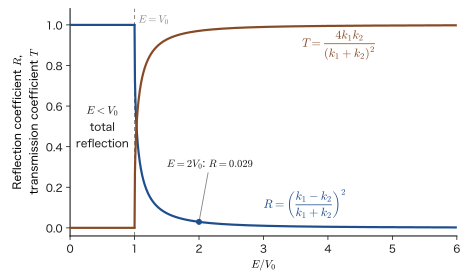
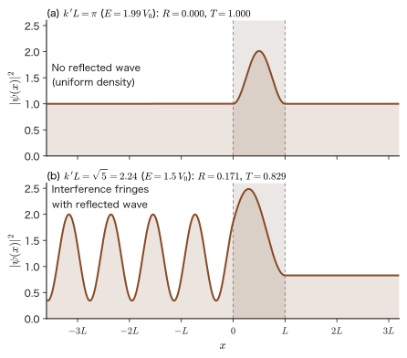
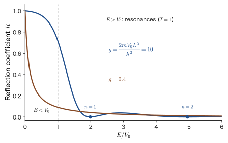

Chapter 12Tunneling — Step and Barrier Potentials
Let us roll a ball toward a slope. If it does not have enough momentum, the ball stops partway up the slope and rolls back. From the conservation of mechanical energy in high-school physics, it is an unquestionable fact that if the kinetic energy falls short of the increase in potential energy, the ball cannot get over the slope. Yet microscopic particles such as electrons sometimes appear on the far side of a wall that they supposedly “lack the momentum” to cross. This is tunneling. For example, when an electron of energy $7\ \mathrm{eV}$ hits a wall of height $10\ \mathrm{eV}$ and thickness $0.5\ \mathrm{nm}$, it passes through to the other side of the wall with a probability of about $5\times10^{-4}$. If the thickness of the wall is made $2\ \mathrm{nm}$, the probability drops to $10^{-15}$ (Section 12.3). Two properties—“the probability is small but not $0$, and it is very sensitive to the thickness of the wall”—account for almost everything about tunneling.
Thanks to these properties, the scanning tunneling microscope can distinguish the bumps and dips of a single atom, flash memory retains information even when the power is turned off, nuclear fusion of hydrogen takes place at the center of the Sun, and it takes as long as 4.5 billion years for half of the uranium $238$ nuclei to emit $\alpha$ rays and change into other nuclei.
The key to understanding tunneling is to treat the particle as a “wave.” In the finite well of the previous chapter, we saw that the wave function “penetrates” into the wall outside the well, decaying like $e^{-\kappa x}$. If the wall is thin, the penetrating wave reaches the far side of the wall and becomes a propagating wave again there. This is the passage through the wall. The method of calculation is the same as in the previous chapters: we solve the Schrödinger equation in each region and simply join the wave function and its slope continuously at the boundaries between the regions. However, what we want to find this time is not the energy of a bound state but the fraction $R$ that is reflected and the fraction $T$ that is transmitted when the wave of the particle hits the wall. The energy $E$ can take any value we like, and what is determined is the ratio of the coefficients. A problem of this kind is called a scattering problem. The reflection and transmission of waves are familiar phenomena from waves on a string (AD 03, “Introductory University Physics,” Chapter 14, Section 14.2) and from the total internal reflection of light and the evanescent wave (Section 14.7); in quantum mechanics, a particle simply behaves in the same way.
In this chapter, we first sort out the idea of reflection and transmission (the probability current) with the simplest step potential (Section 12.2), and then solve the problem of a barrier of width $L$ and height $V_0$ to derive the exact expression for the transmission coefficient (Section 12.3). Next we examine why reflection occurs even when the energy is higher than the barrier, and the resonance condition under which the reflection vanishes (Section 12.4). Since the transmission coefficient of a thick barrier approaches $e^{-2\kappa L}$, we go on to the Gamow factor, which extends this to potentials of general shape, and to an introduction to the WKB approximation (Section 12.5), and we check numerically why the half-life of $\alpha$ decay varies by many orders of magnitude (Section 12.6). Finally, we estimate tunneling in materials and devices, such as the scanning tunneling microscope, the tunnel diode, and flash memory (Section 12.7).
- To be able to solve the Schrödinger equation region by region for step and barrier potentials, set up simultaneous equations for the coefficients from the boundary conditions (continuity of $\psi$ and $\psi'$), and find the reflection coefficient $R$ and the transmission coefficient $T$
- To be able to define the reflection and transmission coefficients from the probability current $J$ and to verify that $R+T=1$; to be able to explain the case in which the ratio of the squared amplitudes is not the transmission coefficient (when the speeds differ)
- To be able to derive the transmission coefficient $T=\left[1+\dfrac{V_0^2\sinh^2\kappa L}{4E(V_0-E)}\right]^{-1}$ of a barrier with $E\lt V_0$ in two different ways, and to estimate numerically its exponential dependence on the thickness, the mass, and the energy
- To be able to explain, as wave interference, that reflection occurs in quantum mechanics even for $E\gt V_0$, and that the reflection vanishes (resonance) when $k'L=n\pi$
- To be able to derive the thick-barrier approximation $T\approx e^{-2\kappa L}$ and the expression $T\approx\exp\!\left[-2\int\kappa\,\dd x\right]$ for a general potential (the Gamow factor), and to state the conditions under which the WKB approximation applies
- To be able to estimate $\alpha$ decay, the STM, field emission, and the leakage current through an oxide film numerically from the tunneling probability
Source notes: Yasuhide Mochizuki, “Physics Notes: Quantum Mechanics 2,” pp. 22–24, and the five addendum sheets on the tunneling effect.
12.1 Classical and Quantum — From Penetration to Tunneling
12.1.1 The classical answer — kinetic energy cannot be negative
Suppose a particle moves along the one-dimensional $x$ axis in a potential energy $V(x)$. If there is no friction, the total energy (mechanical energy) $E$ is constant, and
\begin{equation} E=\frac{p^2}{2m}+V(x) \qquad\text{that is}\qquad \frac{p^2}{2m}=E-V(x) \label{eq:12-energy} \end{equation}holds ($m$ is the mass of the particle and $p$ is its momentum). The kinetic energy $p^2/2m$ is the square of a real momentum $p$, so it must be greater than or equal to $0$. Therefore a classical particle can exist only where $V(x)\le E$. Where $V(x)\gt E$, the right-hand side of Eq. \eqref{eq:12-energy} becomes negative, which would mean the impossible situation of a negative kinetic energy, so the particle can never enter such a region. A point where $V(x)=E$ is called a turning point. A ball rolling toward a hill has its speed drop to $0$ at the turning point and turns back from there.
For example, suppose that a point charge placed at the origin (a negative charge that attracts a particle of charge $+Q$) creates a valley-shaped potential $V(x)$ like the one in Figure 12.1. The actual Coulomb potential diverges at the origin and has no bottom, but here we represent it by a valley with a rounded bottom. A particle whose total energy $E$ lies just above the bottom of the valley can move only in the narrow range $\abs{x}\le x_{\mathrm t}$ where $V(x)\le E$ (the points $x=\pm x_{\mathrm t}$ are the turning points). This is because trying to go outside that range would take it into the region $V(x)\gt E$, where the kinetic energy would be negative. This is the answer of classical mechanics, and it corresponds to “cannot leave this range” in Figure 12.1 (a).
12.1.2 The answer of quantum mechanics — there is a wave function inside the wall, too
In quantum mechanics, however, the particle can be found even at places where the total energy $E$ is lower than the potential energy $V$ (that is, where the kinetic energy would have to be negative). This is Figure 12.1 (b). It may seem a strange phenomenon, but once we write down the Schrödinger equation, we see that it is in fact a perfectly natural consequence. Let us consider the time-independent Schrödinger equation (Chapter 9, Section 9.2)
\begin{equation} -\frac{\hbar^2}{2m}\frac{\dd^2\psi}{\dd x^2}+V\psi=E\psi \qquad\Longleftrightarrow\qquad \frac{\dd^2\psi}{\dd x^2}=-\frac{2m}{\hbar^2}\bigl(E-V\bigr)\psi \label{eq:12-tise} \end{equation}in a region where the potential has a constant value $V$. The sign of the coefficient $E-V$ on the right-hand side completely changes the form of the solutions.
- $E\gt V$ (classically allowed region): if we let $k=\sqrt{2m(E-V)}/\hbar$, then $\psi''=-k^2\psi$. The solutions are $e^{\pm ikx}$ (oscillating waves). The wavenumber $k$ corresponds to the momentum $\hbar k$.
- $E\lt V$ (classically forbidden region): if we let $\kappa=\sqrt{2m(V-E)}/\hbar$, then $\psi''=+\kappa^2\psi$. The solutions are $e^{\pm\kappa x}$ (growing or decaying exponentially). We call $\kappa$ the decay constant.
Even in the forbidden region, the equation does not force $\psi\equiv0$. Inside a wall of finite height, $\psi$ decreases rapidly like $e^{-\kappa x}$, but it does not become $0$. By the Born interpretation, $\abs{\psi}^2\dd x$ is the probability of finding the particle, so there is a nonzero probability of finding the particle inside the wall as well. This is the same phenomenon as the penetration that we saw for the finite well in the previous chapter (Chapter 11, Section 11.1). Only when the wall is infinitely high ($V_0\to\infty$, $\kappa\to\infty$) does the penetration depth $1/\kappa$ become $0$, which gives the $\psi=0$ of Chapter 10.
What happens if the wall is sufficiently thin? At the point where the penetrating wave has made its way completely through the wall, we are in a free region with $V=0$, so $\psi$ again becomes a traveling wave $e^{ikx}$. On the far side of the wall, a wave traveling to the right remains—small, but certainly there. Since it looks as if the particle had dug a tunnel through the wall and passed through, this is called tunneling. In other words, tunneling is a phenomenon that extends the penetration effect: it occurs when the wall is so thin that the penetrating wave reaches all the way through it, and it is essentially the same thing as penetration.
Let us specify the situation we will examine. As in Figure 12.2, a particle travels from the left in the positive direction of the $x$ axis and strikes a wall of height $V_0$ occupying $0\le x\le L$ (a potential barrier). The potential is
\begin{equation} V(x)=\begin{cases}0 & (x\lt0,\ \ L\lt x)\\[1mm] V_0 & (0\le x\le L)\end{cases} \label{eq:12-V} \end{equation}and the energy of the particle is $E\lt V_0$ (in Section 12.4 we also treat $E\gt V_0$). The classical answer is “the particle is completely reflected at $x=0$.” Let us first take a look at the quantum-mechanical answer in the language of waves.
On the left, the incident wave heading toward the barrier and the reflected wave returning from the barrier are superposed. Inside the barrier the wave decays. And on the right, a transmitted wave of small amplitude continues. The amplitude of the transmitted wave is small because the wave has decayed inside the barrier. In the following sections we turn this picture into equations and calculate the proportions of incidence, reflection, and transmission.
12.1.3 Reconciliation with energy conservation
Question: Doesn't a particle's being where the kinetic energy is negative violate energy conservation?
According to Eq. \eqref{eq:12-energy}, the kinetic energy is negative wherever $V\gt E$. Yet the probability of finding the particle there is not $0$. Isn't that a contradiction?
The answer lies in the operation of “checking whether the particle is inside the wall.” To find a particle inside the barrier, we must measure its position with a precision that fits inside the barrier. The probability density $\abs{\psi}^2\propto e^{-2\kappa x}$ decays over a length $1/(2\kappa)$, so let the precision of the position be $\Delta x\approx1/(2\kappa)$. From the uncertainty principle (Chapter 8, Section 8.6; measurement disturbance is discussed in Section 8.7) $\Delta x\,\Delta p\ge\hbar/2$, this measurement disturbs the momentum by at least
$$ \Delta p\gtrsim\frac{\hbar}{2\Delta x}=\hbar\kappa $$and the kinetic energy is disturbed by $\dfrac{(\Delta p)^2}{2m}\gtrsim\dfrac{\hbar^2\kappa^2}{2m}=V_0-E$ (we used $\hbar^2\kappa^2/2m=V_0-E$). In other words, measuring the position inside the wall gives the particle at least $V_0-E$ of energy, which exactly cancels the negative kinetic energy $-(V_0-E)$ inside the wall. A particle “found” inside the wall by a measurement is no longer in the same state as the particle before the measurement. Energy conservation holds properly for the whole system, including the measuring apparatus. One can never observe a particle moving inside the wall with its kinetic energy remaining negative. It is best to think that the decaying wave inside the wall does not mean that the particle is “running” inside the wall; rather, it exists as part of the wave that determines the probability of finding the particle on the other side of the wall.
$$ \Delta p\gtrsim\frac{\hbar}{2\Delta x}=\frac{\hbar\kappa}{2} $$and the kinetic energy is disturbed by roughly $\dfrac{(\Delta p)^2}{2m}\gtrsim\dfrac{\hbar^2\kappa^2}{8m}=\dfrac{V_0-E}{4}$ (we used $\hbar^2\kappa^2/2m=V_0-E$). In other words, measuring the position inside the wall gives the particle an energy of the same order as $V_0-E$. A particle “found” inside the wall by a measurement is no longer in the same state as the particle before the measurement. Energy conservation holds properly for the whole system, including the measuring apparatus. One can never observe a particle moving inside the wall with its kinetic energy remaining negative. It is best to think that the decaying wave inside the wall does not mean that the particle is “running” inside the wall; rather, it exists as part of the wave that determines the probability of finding the particle on the other side of the wall.
The same thing happens with light — total internal reflection and the evanescent wave
When light is incident from inside glass on the boundary with air at an angle exceeding the critical angle for total internal reflection, the light is totally internally reflected. Yet on the air side, a wave in which the electric field of the light decays exponentially (the evanescent wave) leaks out (AD 03, “Introductory University Physics,” Chapter 14, Section 14.7). If a second piece of glass is brought close, with the air gap reduced to about a wavelength or less, the leaked wave reaches the glass on the opposite side, and part of the light that would have been totally reflected passes through the gap. This is called frustrated total internal reflection, and the intensity of the transmitted light decreases exponentially with the width of the gap. The phenomenon in which a particle's wave function decays inside a barrier and remains after passing through the barrier can be written with exactly the same mathematics (a wave equation containing a decaying wave). Tunneling is not a phenomenon that is “mysterious because it involves particles”; it is a phenomenon that “occurs because they are waves.”
12.1.4 Where tunneling appears — experimental facts and history
Before getting into detailed calculations, let us first survey the situations in which tunneling actually operates. We will calculate every one of them numerically in later sections.
Application: Phenomena in which tunneling plays the leading role
- $\alpha$ decay (Section 12.6): An $\alpha$ particle inside an atomic nucleus is confined in the well of the nuclear force, but it escapes by tunneling through the Coulomb barrier outside the well. The half-life of uranium $238$ is about $4.5\times10^{9}$ years, while that of polonium $212$ is about $3\times10^{-7}$ seconds, so they differ by about 24 orders of magnitude. This can be explained by the difference in the transmission probabilities of the barriers.
- Nuclear fusion in the Sun (Section 12.6): Protons at the center of the Sun fuse by tunneling through a Coulomb barrier (about $1\ \mathrm{MeV}$) that is far higher than the energy of thermal motion (about $1\ \mathrm{keV}$). Without tunneling, the Sun would not shine.
- Scanning tunneling microscope (STM) (Section 12.7): The current of electrons that tunnel through the vacuum gap between a metal tip and a sample depends exponentially on the width of the gap; this fact is used to measure the bumps and dips of atoms.
- Tunnel diode, flash memory, field emission (Section 12.7): Electrons tunnel through the band gap of a semiconductor or through an oxide film.
- Motion inside molecules: The nitrogen atom of the ammonia molecule $\mathrm{NH_3}$ goes back and forth, by tunneling through the barrier, between two stable positions, one above and one below the plane formed by the three hydrogen atoms (the inversion frequency is about $2.4\times10^{10}\ \mathrm{Hz}$). Tunneling is also involved in the transfer of a hydrogen atom in a chemical reaction (Section 12.7).
Let us briefly trace the history. Tunneling was discovered at several places at the same time in the late 1920s, right after quantum mechanics was established. Devices that made use of tunneling in solids were realized in the latter half of the 20th century. Table 12.1 summarizes them in chronological order.
| Year | Person | Description |
|---|---|---|
| 1927 | Hund | While studying molecular spectra, he noticed that a particle can move from one valley of a potential with two valleys to the other |
| 1928 | Gamow | Explained $\alpha$ decay as a phenomenon in which an $\alpha$ particle tunnels through the Coulomb barrier of the atomic nucleus. Gurney and Condon published the same explanation independently in the same year |
| 1928 | Fowler, Nordheim | Explained field emission, in which electrons are ejected from a metal when a strong electric field is applied to it, as transmission through a triangular barrier (Section 12.7) |
| Around 1957 | Leo Esaki | Found a tunneling current in a junction of heavily doped semiconductors (the tunnel diode). He received the 1973 Nobel Prize in Physics together with Giaever and Josephson |
| 1981 | Binnig, Rohrer | Developed the scanning tunneling microscope. They received the 1986 Nobel Prize in Physics together with Ruska, who was honored for the electron microscope |
Example 12.1: Penetration depth — an electron, a proton, and a baseball
Inside the barrier the wave function decays like $e^{-\kappa x}$. Let us call the distance $1/\kappa$ over which the amplitude falls to $1/e$ (about $0.37$) the penetration depth (the distance over which the probability density $\abs{\psi}^2\propto e^{-2\kappa x}$ falls to $1/e$ is $1/(2\kappa)$). When the barrier is higher than the energy by $V_0-E=1\ \mathrm{eV}$, find the penetration depth of (1) an electron and (2) a proton. (3) What is the penetration depth when a baseball of mass $0.145\ \mathrm{kg}$ hits a wall that is higher than its energy by $1\ \mathrm{J}$?
Solution. We have $\kappa=\dfrac{\sqrt{2m(V_0-E)}}{\hbar}$, and the penetration depth is $1/\kappa=\hbar/\sqrt{2m(V_0-E)}$. We use $1\ \mathrm{eV}=1.602\,177\times10^{-19}\ \mathrm{J}$ and $\hbar=1.054\,572\times10^{-34}\ \mathrm{J\,s}$.
(1) Electron ($m_{\mathrm e}=9.109\,384\times10^{-31}\ \mathrm{kg}$): $2m_{\mathrm e}(V_0-E)=2\times9.109\,384\times10^{-31}\times1.602\,177\times10^{-19}=2.9190\times10^{-49}\ \mathrm{kg\,J}$. The square root is $5.4028\times10^{-25}\ \mathrm{kg\,m/s}$, so
$$ \kappa=\frac{5.4028\times10^{-25}}{1.054\,572\times10^{-34}}=5.123\times10^{9}\ \mathrm{m^{-1}},\qquad \frac{1}{\kappa}=1.952\times10^{-10}\ \mathrm{m}=0.195\ \mathrm{nm} $$This is about the same length as the size of an atom (about $0.1\ \mathrm{nm}$).
(2) Proton ($m_{\mathrm p}=1.672\,622\times10^{-27}\ \mathrm{kg}$): The mass is about $1836$ times that of the electron, so $\kappa$ becomes $\sqrt{1836}=42.85$ times as large. We have $2m_{\mathrm p}(V_0-E)=5.3597\times10^{-46}$ and its square root is $2.3151\times10^{-23}$, so $\kappa=2.195\times10^{11}\ \mathrm{m^{-1}}$ and
$$ \frac{1}{\kappa}=4.56\times10^{-12}\ \mathrm{m}=4.56\ \mathrm{pm} $$A proton penetrates into the wall more than 40 times less readily than an electron.
(3) Baseball: $2m(V_0-E)=2\times0.145\times1=0.29\ \mathrm{kg\,J}$ and the square root is $0.5385\ \mathrm{kg\,m/s}$, so $1/\kappa=1.054\,572\times10^{-34}/0.5385=1.96\times10^{-34}\ \mathrm{m}$. This is far smaller than the size of an atomic nucleus ($10^{-15}\ \mathrm{m}$), and tunneling does not show up in the everyday world. The larger the mass and the larger the energy difference, the shorter the penetration depth, and the results of quantum mechanics approach those of classical mechanics.
12.2 The Step Potential — The Basics of Reflection and Transmission
The barrier problem (Section 12.3) involves three regions and is a little more complicated. So we first work out how to count reflection and transmission of waves for the simplest potential, which has only one boundary: the step potential. The tools we obtain here (how to set up the boundary conditions, and the definitions of the reflection and transmission coefficients in terms of the probability current) will be used unchanged for the barrier.
12.2.1 The step potential and the solution for $E\gt V_0$
Let the potential be
\begin{equation} V(x)=\begin{cases}0 & (x\lt0)\\ V_0 & (x\gt0)\end{cases} \label{eq:12-step} \end{equation}and let a particle be incident from the left ($x\lt0$). First we consider the case in which the particle's energy is higher than the step ($E\gt V_0$; $V_0$ may be positive or negative: $V_0\gt0$ is an upward step and $V_0\lt0$ is a downward step). In classical mechanics, the particle merely decelerates at $x=0$ (accelerates if $V_0\lt0$) and always proceeds into $x\gt0$. What happens in quantum mechanics?
We solve Eq. \eqref{eq:12-tise} in each region. For $x\lt0$ we have $V=0$, so, letting $k_1=\sqrt{2mE}/\hbar$, we get $\psi''=-k_1^2\psi$. For $x\gt0$ we have $V=V_0$, so, letting $k_2=\sqrt{2m(E-V_0)}/\hbar$, we get $\psi''=-k_2^2\psi$. The wavenumber $k_1$ is the same quantity as $k_0=\sqrt{2mE}/\hbar$ for the barrier in the next section. Including the time dependence, $\Psi(x,t)=\psi(x)\,e^{-iEt/\hbar}$, so $e^{ikx}\,e^{-iEt/\hbar}=e^{i(kx-\omega t)}$ ($\omega=E/\hbar$) is a wave traveling to the right, and $e^{-ikx}\,e^{-iEt/\hbar}$ is a wave traveling to the left. Therefore the wave function can be written as
\begin{equation} \psi(x)=\begin{cases}A\,e^{ik_1x}+B\,e^{-ik_1x} & (x\lt0)\\[1mm] C\,e^{ik_2x} & (x\gt0)\end{cases} \label{eq:12-step-psi} \end{equation}Here $A$ is the amplitude of the incident wave (traveling to the right) and $B$ is that of the reflected wave (traveling to the left). In $x\gt0$ we place only the transmitted wave $C$, which travels to the right, because the left-moving wave $e^{-ik_2x}$ would mean that a particle is incident from infinity on the right, and we are not considering such a situation.
Next we impose the boundary conditions at $x=0$. Since $V$ is a step of finite height, $\psi$ and $\psi'$ must be continuous at the boundary (Theorem 9.3(i) in Chapter 9, Section 9.6.3; this is the same conclusion as Theorem 11.2 in Section 11.2. The key point of the derivation is that when Eq. \eqref{eq:12-tise} is integrated from $x=-\varepsilon$ to $x=+\varepsilon$ and $\varepsilon\to0$ is taken, the right-hand side approaches $0$).
Derivation: Amplitude ratios for the step potential ($E\gt V_0$)
Continuity of $\psi$ at $x=0$: from $\psi(-0)=\psi(+0)$,
$$ A+B=C \qquad\text{(a)} $$Continuity of $\psi'$: $\psi'(-0)=\psi'(+0)$. Differentiating Eq. \eqref{eq:12-step-psi} gives $\psi'=ik_1(Ae^{ik_1x}-Be^{-ik_1x})$ for $x\lt0$ and $\psi'=ik_2Ce^{ik_2x}$ for $x\gt0$, so
$$ ik_1(A-B)=ik_2C\quad\Longrightarrow\quad A-B=\frac{k_2}{k_1}C \qquad\text{(b)} $$Adding (a) and (b) gives $2A=\left(1+\dfrac{k_2}{k_1}\right)C=\dfrac{k_1+k_2}{k_1}C$, and therefore $\dfrac{C}{A}=\dfrac{2k_1}{k_1+k_2}$. Subtracting (b) from (a) gives $2B=\left(1-\dfrac{k_2}{k_1}\right)C=\dfrac{k_1-k_2}{k_1}\cdot\dfrac{2k_1}{k_1+k_2}A$, and therefore $\dfrac{B}{A}=\dfrac{k_1-k_2}{k_1+k_2}$.
$$ \frac{B}{A}=\frac{k_1-k_2}{k_1+k_2},\qquad \frac{C}{A}=\frac{2k_1}{k_1+k_2}\qquad(E\gt V_0) \qquad\text{(c)} $$(The same result follows from (a) by writing $B/A=C/A-1=(2k_1-k_1-k_2)/(k_1+k_2)$.)
∎
The ratios $B/A$ and $C/A$ are real. For an upward step ($V_0\gt0$) we have $k_2\lt k_1$, so $B/A\gt0$ (the reflected wave has the same sign as the incident wave, with no phase shift) and $C/A\gt1$. (For a downward step $V_0\lt0$ we have $k_2\gt k_1$, so $B/A\lt0$ (the phase of the reflected wave is shifted by $\pi$) and $C/A\lt1$.) In particular, for $V_0\gt0$, $\abs{C/A}^2=4k_1^2/(k_1+k_2)^2$ always exceeds $1$. Since a transmission “probability” cannot exceed $1$, we cannot call $\abs{C/A}^2$ the transmission coefficient. In the next subsection we define the transmission coefficient correctly.
12.2.2 Reflection and transmission coefficients — counting with the probability current
“Of the incident particles, what fraction is reflected and what fraction is transmitted?” must be counted by the number of particles passing per unit time. The square of the wave function, $\abs{\psi}^2$, is the probability density (the probability of finding the particle per unit length), and if the speed of the particle differs from region to region, the number of particles passing per unit time differs even for the same density. The probability of passing a given point to the right per unit time is the probability current $J$ (Chapter 9, Section 9.3). In one dimension it is given by
\begin{equation} J=\frac{\hbar}{2mi}\left(\psi^*\frac{\dd\psi}{\dd x}-\psi\frac{\dd\psi^*}{\dd x}\right)=\frac{\hbar}{m}\,\mathrm{Im}\!\left(\psi^*\frac{\dd\psi}{\dd x}\right) \label{eq:12-J} \end{equation}For example, for the plane wave $\psi=Ce^{ikx}$ we have $\psi^*\psi'=ik\abs{C}^2$, so $J=\dfrac{\hbar k}{m}\abs{C}^2=v\,\abs{C}^2$. This is the natural result “speed $v=\hbar k/m$ × probability density $\abs{C}^2$”: the current is the product of the probability density and the speed.
In the wave function for $x\lt0$ in Eq. \eqref{eq:12-step-psi}, the incident and reflected waves overlap, so we substitute it into Eq. \eqref{eq:12-J} as it is. Then $\psi^*\psi'$ becomes
$$ \psi^*\psi'=\bigl(A^*e^{-ik_1x}+B^*e^{ik_1x}\bigr)\,ik_1\bigl(Ae^{ik_1x}-Be^{-ik_1x}\bigr)=ik_1\Bigl[\abs{A}^2-\abs{B}^2+\bigl(B^*Ae^{2ik_1x}-A^*Be^{-2ik_1x}\bigr)\Bigr] $$The last parenthesis has the form $z-z^*$ (with $z=B^*Ae^{2ik_1x}$) and is therefore purely imaginary, so multiplying it by $ik_1$ gives a real number, which does not contribute to the imaginary part. Therefore we obtain
\begin{equation} J=\frac{\hbar k_1}{m}\bigl(\abs{A}^2-\abs{B}^2\bigr)\quad(x\lt0),\qquad J=\frac{\hbar k_2}{m}\abs{C}^2\quad(x\gt0) \label{eq:12-J-step} \end{equation}The current for $x\lt0$ is the incident current to the right, $\dfrac{\hbar k_1}{m}\abs{A}^2$, minus the reflected current to the left, $\dfrac{\hbar k_1}{m}\abs{B}^2$ (the interference term does not contribute to the current).
Definition 12.1: Reflection and transmission coefficients
For the probability current of the incident wave $J_{\mathrm{in}}$, the magnitude of the current of the reflected wave $J_{\mathrm{R}}$, and the current of the transmitted wave $J_{\mathrm{T}}$, the quantities
$$ R\equiv\frac{J_{\mathrm{R}}}{J_{\mathrm{in}}},\qquad T\equiv\frac{J_{\mathrm{T}}}{J_{\mathrm{in}}} $$are called the reflection coefficient and the transmission coefficient, respectively. They express the fraction of the incident probability that is reflected and the fraction that is transmitted.
For the step potential, $J_{\mathrm{in}}=\dfrac{\hbar k_1}{m}\abs{A}^2$, $J_{\mathrm{R}}=\dfrac{\hbar k_1}{m}\abs{B}^2$, and $J_{\mathrm{T}}=\dfrac{\hbar k_2}{m}\abs{C}^2$, so we have
$$ R=\abs{\frac{B}{A}}^2,\qquad T=\frac{k_2}{k_1}\abs{\frac{C}{A}}^2 $$The transmission coefficient carries the factor $k_2/k_1$, the ratio of the wavenumbers (the ratio of the speeds). Let us substitute the result (c) of the previous subsection.
Theorem 12.1: Reflection and transmission coefficients of the step potential ($E\gt V_0$)
For $k_1=\sqrt{2mE}/\hbar$ and $k_2=\sqrt{2m(E-V_0)}/\hbar$, we have
\begin{equation} R=\left(\frac{k_1-k_2}{k_1+k_2}\right)^2,\qquad T=\frac{4k_1k_2}{(k_1+k_2)^2},\qquad R+T=1 \label{eq:12-step-RT} \end{equation}Proof
$R=\abs{B/A}^2=\dfrac{(k_1-k_2)^2}{(k_1+k_2)^2}$. $T=\dfrac{k_2}{k_1}\abs{\dfrac{C}{A}}^2=\dfrac{k_2}{k_1}\cdot\dfrac{4k_1^2}{(k_1+k_2)^2}=\dfrac{4k_1k_2}{(k_1+k_2)^2}$. The sum is
$$ R+T=\frac{(k_1-k_2)^2+4k_1k_2}{(k_1+k_2)^2}=\frac{k_1^2-2k_1k_2+k_2^2+4k_1k_2}{(k_1+k_2)^2}=\frac{(k_1+k_2)^2}{(k_1+k_2)^2}=1 $$Here $R+T=1$ is a restatement of the continuity of the probability current, $k_1(\abs{A}^2-\abs{B}^2)=k_2\abs{C}^2$. Indeed, $\abs{A}^2-\abs{B}^2=\abs{A}^2\left[1-\dfrac{(k_1-k_2)^2}{(k_1+k_2)^2}\right]=\dfrac{4k_1k_2}{(k_1+k_2)^2}\abs{A}^2$ and $k_2\abs{C}^2=\dfrac{4k_1^2k_2}{(k_1+k_2)^2}\abs{A}^2$ coincide when the former is multiplied by $k_1$.
∎
Let us look at the results.
- When $E\gg V_0$, $k_2\to k_1$, so $R\to0$ and $T\to1$. If the step is small compared with the energy of the particle, almost no reflection occurs.
- When $E\to V_0$ (from above), $k_2\to0$, so $R\to1$ and $T\to0$. When the speed of the particle in $x\gt0$ approaches $0$, almost no transmission occurs.
- Even for $E\gt V_0$, $R\ne0$. In classical mechanics, a particle with $E\gt V_0$ always passes over the step ($T=1$). The occurrence of reflection in quantum mechanics is due to the properties of waves. The formulas have exactly the same form as those for the reflection of light at a boundary between different refractive indices ($R=\left(\dfrac{n_1-n_2}{n_1+n_2}\right)^2$ at normal incidence) and for the reflection at a boundary between strings of different linear density (AD 03, “Introductory University Physics,” Sections 14.2 and 14.3). The wavenumber $k$ plays the role of the refractive index $n$.
Example 12.2: An electron entering the surface of a crystal (the step potential with $E\gt V_0$)
In electron diffraction (LEED) and similar experiments, electrons of energy $E=54\ \mathrm{eV}$ are directed at the surface of a crystal. The potential energy inside the crystal is about $10\ \mathrm{eV}$ lower than in vacuum (the inner potential), so we approximate the surface by the step potential $V(x)=0$ ($x\lt0$, vacuum), $V_0=-10\ \mathrm{eV}$ ($x\gt0$, crystal) (an example of a downward step, $V_0\lt0$). (1) Find the fraction $R$ reflected at the surface. (2) As another example, find $R$, $T$, and $\abs{C/A}^2$ when an electron of energy $E=5\ \mathrm{eV}$ is incident on a step of $V_0=3\ \mathrm{eV}$.
Solution. The reflection coefficient is determined only by the ratio of the wavenumbers $\rho\equiv k_2/k_1=\sqrt{(E-V_0)/E}$: $R=\left(\dfrac{1-\rho}{1+\rho}\right)^2$, $T=\dfrac{4\rho}{(1+\rho)^2}$ (Eq. \eqref{eq:12-step-RT} after dividing through by $k_1$).
(1) Since $E-V_0=54-(-10)=64\ \mathrm{eV}$, $\rho=\sqrt{64/54}=1.0887$.
$$ R=\left(\frac{1-1.0887}{1+1.0887}\right)^2=\left(\frac{-0.0887}{2.0887}\right)^2=(-0.04245)^2=1.8\times10^{-3} $$The reflection is only about $0.2\%$, and $T=0.998$. The wavelength inside the crystal becomes shorter by about $8\%$, from the vacuum wavelength $2\pi/k_1=0.167\ \mathrm{nm}$ to $2\pi/k_2=0.153\ \mathrm{nm}$ ($k_2=1.0887\,k_1$). Since the incident energy is much higher than the inner potential, the reflection at the surface is small.
(2) Since $E-V_0=2\ \mathrm{eV}$, $\rho=\sqrt{2/5}=0.6325$.
$$ R=\left(\frac{1-0.6325}{1+0.6325}\right)^2=(0.2252)^2=0.0507,\qquad T=\frac{4\times0.6325}{(1.6325)^2}=\frac{2.5298}{2.6649}=0.9493 $$We have $R+T=1.0000$. On the other hand, $\abs{C/A}^2=\dfrac{4}{(1+\rho)^2}=\dfrac{4}{2.6649}=1.501$ exceeds $1$. The probability density on the transmitted side, $\abs{C}^2$, is 1.5 times that on the incident side, $\abs{A}^2$, but the speed of the particle has slowed to $\rho=0.63$ times its original value, so the current passing through is only $\rho\abs{C/A}^2=0.949$ times the incident current ($=T$). It is the same as on a congested road, where the density of cars is high but the number of cars flowing past hardly changes.
12.2.3 The step with $E\lt V_0$ — total internal reflection and penetration
Next we consider the case in which the particle's energy is lower than the step ($0\lt E\lt V_0$). The solution for $x\lt0$ is the same as before, $Ae^{ik_1x}+Be^{-ik_1x}$ ($k_1=\sqrt{2mE}/\hbar$). For $x\gt0$, Eq. \eqref{eq:12-tise} becomes $\psi''=\kappa^2\psi$ ($\kappa=\sqrt{2m(V_0-E)}/\hbar$), and the general solution is $Ce^{-\kappa x}+De^{+\kappa x}$. Since $e^{+\kappa x}$ diverges as $x\to\infty$ and would make the probability density infinitely large, it is not physically allowed: $D=0$. Hence
$$ \psi(x)=\begin{cases}A\,e^{ik_1x}+B\,e^{-ik_1x} & (x\lt0)\\ C\,e^{-\kappa x} & (x\gt0)\end{cases} $$The boundary conditions at $x=0$ are $A+B=C$ from the continuity of $\psi$ and $ik_1(A-B)=-\kappa C$ from the continuity of $\psi'$, that is, $A-B=\dfrac{-\kappa}{ik_1}C=\dfrac{i\kappa}{k_1}C$ (we used $-1/i=i$). Adding and subtracting as in the previous subsection, we obtain
$$ 2A=\left(1+\frac{i\kappa}{k_1}\right)C\ \Rightarrow\ \frac{C}{A}=\frac{2k_1}{k_1+i\kappa},\qquad \frac{B}{A}=\frac{C}{A}-1=\frac{2k_1-k_1-i\kappa}{k_1+i\kappa}=\frac{k_1-i\kappa}{k_1+i\kappa} $$This has the form obtained from the result (c) for $E\gt V_0$ by setting $k_2\to i\kappa$.
Theorem 12.2: Total internal reflection at the step potential ($E\lt V_0$)
For a step with $E\lt V_0$, $\abs{B/A}=1$, that is, $R=1$ and $T=0$. The phase of the reflected wave is shifted by $-2\arctan(\kappa/k_1)$:
\begin{equation} \frac{B}{A}=\frac{k_1-i\kappa}{k_1+i\kappa}=e^{-2i\delta},\qquad \delta=\arctan\frac{\kappa}{k_1},\qquad \abs{\frac{C}{A}}^2=\frac{4k_1^2}{k_1^2+\kappa^2}=\frac{4E}{V_0} \label{eq:12-step-low} \end{equation}On the transmitted side there remains a decaying penetration probability density, $\abs{\psi}^2=\abs{C}^2e^{-2\kappa x}$, but the current is $0$.
Proof
$k_1-i\kappa$ and $k_1+i\kappa$ are complex conjugates of each other and have equal absolute values ($\sqrt{k_1^2+\kappa^2}$), so $\abs{B/A}=1$ and $R=\abs{B/A}^2=1$. Writing $k_1+i\kappa=\sqrt{k_1^2+\kappa^2}\,e^{i\delta}$ ($\tan\delta=\kappa/k_1$), we have $k_1-i\kappa=\sqrt{k_1^2+\kappa^2}\,e^{-i\delta}$, so $B/A=e^{-2i\delta}$. Also, $\abs{C/A}^2=4k_1^2/(k_1^2+\kappa^2)$, and since $k_1^2+\kappa^2=2mV_0/\hbar^2$ and $k_1^2=2mE/\hbar^2$, this ratio $=4E/V_0$. As for the current, $\psi^*\psi'=-\kappa\abs{C}^2e^{-2\kappa x}$ for $\psi=Ce^{-\kappa x}$ is real, so the imaginary part in Eq. \eqref{eq:12-J} is $0$: $J=0$. Hence $T=0$.
∎
In the limit of a very high step ($V_0\to\infty$, $\kappa\to\infty$), $\delta\to\pi/2$, $B/A\to-1$, and $C\to0$, which agrees with the reflection at the wall of the infinite well, where $\psi=0$ at the wall (Chapter 10) (the phase is shifted by $\pi$; fixed-end reflection). On the other hand, for $E\to V_0$ ($\kappa\to0$), $\delta\to0$ and $B/A\to1$ (free-end reflection). The picture in which the wave penetrates the wall and is then reflected is the same as in the total internal reflection of light (AD 03, Section 14.7), where the light seeps out a little into the air side before it is reflected.
Example 12.3: The step with $E\lt V_0$ — total internal reflection and penetration depth
An electron with $E=2\ \mathrm{eV}$ is incident from the left on a step of height $V_0=4\ \mathrm{eV}$. (1) Find $k_1$, $\kappa$, $B/A$, and $C/A$. (2) Find the phase jump on reflection. (3) By what factor is the probability density $\abs{\psi(0)}^2$ at the position of the step larger than the density $\abs{A}^2$ of the incident wave? Also find the depth at which the probability density falls to $e^{-2}$ times its value at the wall. (4) Compute the probability currents and confirm that $R=1$ and $T=0$.
Solution. (1) Since $E=2\ \mathrm{eV}$ and $V_0-E=2\ \mathrm{eV}$, the two values are equal, so $k_1=\kappa=\sqrt{2m_{\mathrm e}\cdot2\ \mathrm{eV}}/\hbar=7.245\times10^{9}\ \mathrm{m^{-1}}$ (this is $\sqrt{2}$ times the value $\kappa=5.123\times10^{9}\ \mathrm{m^{-1}}$ of the electron in Example 12.1). Therefore
$$ \frac{B}{A}=\frac{k_1-i\kappa}{k_1+i\kappa}=\frac{1-i}{1+i}=\frac{(1-i)^2}{(1+i)(1-i)}=\frac{-2i}{2}=-i,\qquad \frac{C}{A}=\frac{2}{1+i}=1-i $$(2) Since $B/A=-i=e^{-i\pi/2}$, the phase jump is $-\pi/2$. This agrees with $-2\delta=-\pi/2$ for $\delta=\arctan(\kappa/k_1)=\pi/4$.
(3) We have $\abs{\psi(0)}^2=\abs{C}^2=\abs{1-i}^2\abs{A}^2=2\abs{A}^2$, that is, $4E/V_0=2$ times. The probability density of the penetrating wave, $\abs{C}^2e^{-2\kappa x}$, becomes $e^{-2}$ times its wall value when $\kappa x=1$, that is, at $x=1/\kappa=\dfrac{1}{7.245\times10^{9}\ \mathrm{m^{-1}}}=1.38\times10^{-10}\ \mathrm{m}=0.138\ \mathrm{nm}$.
(4) We have $J_{\mathrm{in}}=\dfrac{\hbar k_1}{m}\abs{A}^2$ and $J_{\mathrm{R}}=\dfrac{\hbar k_1}{m}\abs{B}^2=\dfrac{\hbar k_1}{m}\abs{-i}^2\abs{A}^2=J_{\mathrm{in}}$. Hence $R=J_{\mathrm{R}}/J_{\mathrm{in}}=1$. On the transmitted side, $\psi=Ce^{-\kappa x}$ and $\psi^*\psi'=-\kappa\abs{C}^2e^{-2\kappa x}$ is real, so $J_{\mathrm{T}}=0$ and $T=0$. The entire incident current is reflected; only a standing “pool” of probability density remains at the position of the wall, and the inflow is $0$.
12.2.4 The $R$ and $T$ of the step potential viewed as functions of energy
Figure 12.3 plots Eqs. \eqref{eq:12-step-RT} and \eqref{eq:12-step-low} together as functions of $E/V_0$. For $E\lt V_0$ there is total internal reflection ($R=1$), but as soon as $E$ exceeds $V_0$, transmission begins, and even at $E=2V_0$ a reflection of $R=0.029$ remains. In classical mechanics, the curve is a step function with $T=1$ for $E\gt V_0$. In quantum mechanics, the curve is rounded and blunted near $E=V_0$.

12.3 Transmission Coefficient of a Barrier — When the Energy Is below the Barrier
Now we come to the main subject. For the barrier of Eq. \eqref{eq:12-V} ($V=V_0$ for $0\le x\le L$ and $V=0$ elsewhere), we find the fraction that is transmitted to the other side when a particle of energy $E\lt V_0$ is incident from the left. The procedure is the same as for the step potential, in three stages: (1) solve the Schrödinger equation in each of the three regions, (2) connect $\psi$ and $\psi'$ continuously at the two boundaries $x=0$ and $x=L$, and (3) determine the ratios of the unknown coefficients.
12.3.1 Wave functions in the three regions
We call the regions, from the left, I ($x\lt0$), II ($0\le x\le L$), and III ($x\gt L$), and denote the wave functions in them by $\psi_1$, $\psi_2$, and $\psi_3$. In this chapter, we use the following two wavenumbers.
\begin{equation} k_0=\frac{\sqrt{2mE}}{\hbar},\qquad \kappa=\frac{\sqrt{2m(V_0-E)}}{\hbar} \label{eq:12-k0-kappa} \end{equation}$k_0$ is the wavenumber in the region where $V=0$ (corresponding to the kinetic energy $E$), and $\kappa$ is the decay constant inside the barrier. Both are real and positive (since $0\lt E\lt V_0$). Both have the dimension of a reciprocal length, $\mathrm{m^{-1}}$ (since $\sqrt{\mathrm{kg\cdot J}}/(\mathrm{J\,s})=\mathrm{m^{-1}}$), so $\kappa L$ is dimensionless.
Note on notation: The decay constant is $\kappa$
The quantity that corresponds to the decay constant inside the barrier, which other books write as $b$ or $k_V$, is denoted by $\kappa$ throughout this book, as for the finite well in the previous chapter. The wavenumber in the region where $V=0$ is written $k_0$, and the wavenumber inside the barrier for $E\gt V_0$, which appears in the next section, Section 12.4, is written $k'$. Note also that the $b$ appearing in the field-emission formula of Section 12.7.3 is a field-emission constant and has nothing to do with the decay constant. In addition, $k_0=\sqrt{2mE}/\hbar$ in this chapter is a wavenumber, and it is a different quantity from the spring constant $k_0$ of the next chapter (Chapter 13) and Chapter 19 (the discussion of the spring is self-contained within Chapter 13, so do not confuse the two).
Region I ($x\lt0$): Since $V=0$, Eq. \eqref{eq:12-tise} becomes $-\dfrac{\hbar^2}{2m}\dfrac{\dd^2\psi}{\dd x^2}=E\psi$, that is, $\psi''=-k_0^2\psi$. This is the equation of simple harmonic motion, and its solution is a superposition of the two traveling waves $e^{\pm ik_0x}$:
\begin{equation} \psi_1(x)=A_1\,e^{ik_0x}+A_2\,e^{-ik_0x}\qquad(x\lt0) \label{eq:12-psi1} \end{equation}$A_1e^{ik_0x}$ is a wave traveling to the right, the incident wave heading toward the barrier, and $A_2e^{-ik_0x}$ is a wave traveling to the left, the reflected wave bounced back by the barrier. Multiplying by the time dependence $e^{-iEt/\hbar}$, the former becomes $e^{i(k_0x-\omega t)}$ and the latter $e^{i(-k_0x-\omega t)}$, which shows the direction of travel (Section 12.2).
Region II ($0\le x\le L$): Since $V=V_0$, we have $-\dfrac{\hbar^2}{2m}\psi''+V_0\psi=E\psi$, that is,
$$ \frac{\dd^2\psi}{\dd x^2}-\frac{2m}{\hbar^2}(V_0-E)\,\psi=0 $$Because $V_0-E\gt0$, this equation reads $\psi''=\kappa^2\psi$, and its solution is a combination of exponential functions:
\begin{equation} \psi_2(x)=B_1\,e^{\kappa x}+B_2\,e^{-\kappa x}\qquad(0\le x\le L) \label{eq:12-psi2} \end{equation}Here $e^{\kappa x}$ grows toward the right, and $e^{-\kappa x}$ decreases. Because Region II has only a finite width, there is no need to discard the term that diverges as $x\to\infty$, and both terms are needed (in Section 12.3.5, we will see that a current arises only when both are present).
Region III ($x\gt L$): Since $V=0$ again, the equation is the same as in Region I:
\begin{equation} \psi_3(x)=C_1\,e^{ik_0x}+C_2\,e^{-ik_0x}\qquad(x\gt L) \label{eq:12-psi3} \end{equation}$C_1e^{ik_0x}$ is the transmitted wave traveling to the right, and $C_2e^{-ik_0x}$ is a wave traveling to the left.
12.3.2 Boundary conditions — four equations
At the boundaries between the regions, $x=0$ and $x=L$, the potential has only finite jumps. As in Section 12.2, integrating the Schrödinger equation around a boundary shows that both $\psi$ and $\psi'$ must be continuous at the boundary. That is, the boundary conditions are the following four ($\psi(-0)$ and $\psi(+0)$ are the limiting values as $x=0$ is approached from the left and from the right, respectively):
$$ \begin{cases}\psi_1(0)=\psi_2(0)\\ \psi_2(L)=\psi_3(L)\end{cases}\qquad \begin{cases}\psi_1'(0)=\psi_2'(0)\\ \psi_2'(L)=\psi_3'(L)\end{cases} $$Substituting the wave functions of the regions, Eqs. \eqref{eq:12-psi1}–\eqref{eq:12-psi3}, and their derivatives ($\psi_1'=ik_0(A_1e^{ik_0x}-A_2e^{-ik_0x})$, $\psi_2'=\kappa(B_1e^{\kappa x}-B_2e^{-\kappa x})$, $\psi_3'=ik_0(C_1e^{ik_0x}-C_2e^{-ik_0x})$), we obtain
\begin{align} A_1+A_2&=B_1+B_2 \label{eq:12-bc1}\\ B_1e^{\kappa L}+B_2e^{-\kappa L}&=C_1e^{ik_0L}+C_2e^{-ik_0L} \label{eq:12-bc2}\\ ik_0(A_1-A_2)&=\kappa(B_1-B_2) \label{eq:12-bc3}\\ \kappa\left(B_1e^{\kappa L}-B_2e^{-\kappa L}\right)&=ik_0\left(C_1e^{ik_0L}-C_2e^{-ik_0L}\right) \label{eq:12-bc4} \end{align}Here Eqs. \eqref{eq:12-bc1} and \eqref{eq:12-bc3} are the conditions at $x=0$, and Eqs. \eqref{eq:12-bc2} and \eqref{eq:12-bc4} are the conditions at $x=L$. Dividing both sides of Eq. \eqref{eq:12-bc3} by $ik_0$ and using $1/i=-i$, we bring the two conditions at $x=0$ into the following form:
\begin{equation} \begin{aligned} A_1+A_2&=B_1+B_2\\ A_1-A_2&=-i\,\frac{\kappa}{k_0}\,(B_1-B_2) \end{aligned} \label{eq:12-bc-left} \end{equation}There are six unknowns, $A_1,A_2,B_1,B_2,C_1,C_2$, but only four equations. It is only natural that the solution is not uniquely determined, because (i) the degree of freedom of an overall constant multiple of the whole wave function (it has not been normalized) and (ii) the physical condition on what kind of wave exists on the right-hand side have not yet been fixed. We fix (ii) in the next subsection.
Question: Does this approach apply both classically and quantum-mechanically?
Is the procedure of “solving the wave equation in each region and matching the wave and its slope at the boundaries” an idea that works only for quantum-mechanical particles? Or can it be used in classical mechanics as well?
Sorting this out, we have the following. (a) It applies as it stands to classical waves (waves on a string, sound waves, and electromagnetic waves such as light). Indeed, the reflection and transmission at the junction of strings of different densities (AD 03, “Introductory University Physics,” Section 14.2) are found by exactly the same procedure. The transmission of totally internally reflected light when it is separated by a thin layer of air (frustrated total internal reflection, Section 12.1) leads to exactly the same formula as the transmission through a barrier. (b) It can also be applied to the wave function of a quantum-mechanical particle. Because the particle behaves as a wave, the same procedure as for waves can be used. (c) On the other hand, for a classical particle (a point mass obeying Newton's equation of motion) there is no wave function, and this procedure has no meaning. A classical particle with $E\lt V_0$ is always bounced back by the wall and is never transmitted. In other words, the phenomenon of transmission through a barrier comes out of the procedure itself of “solving the wave equation and matching at the boundaries,” and no special assumption of quantum mechanics is needed for it. What makes quantum mechanics different from classical mechanics is that it uses that wave equation for the motion of a particle.
12.3.3 Only the right-moving wave is transmitted — $C_2=0$
The left-moving wave $C_2e^{-ik_0x}$ in Region III represents particles coming toward the barrier from infinity on the right. The situation we are considering is one in which particles are incident from the left, part of them is reflected, and part is transmitted. No particles come flying in from the right. The matter wave travels in the positive direction of the $x$ axis, and in the range $x\gt L$ there is no wave flowing in the negative direction of the $x$ axis, so we set
\begin{equation} C_2=0 \label{eq:12-C2} \end{equation}This leaves five unknowns, $A_1,A_2,B_1,B_2,C_1$, and four equations. The only remaining degree of freedom is an overall constant multiple of the whole wave function, so the ratios $A_2/A_1$ (reflection) and $C_1/A_1$ (transmission) are determined.
12.3.4 Solving for the coefficients — taking $B_1$ inside the barrier as the reference
We solve the boundary conditions \eqref{eq:12-bc1}–\eqref{eq:12-bc4} with $C_2=0$. First, from the condition at $x=0$, Eq. \eqref{eq:12-bc-left}, we express $A_1,A_2$ in terms of $B_1,B_2$. Adding the two equations gives $2A_1=(B_1+B_2)-i\dfrac{\kappa}{k_0}(B_1-B_2)$, and subtracting gives $2A_2=(B_1+B_2)+i\dfrac{\kappa}{k_0}(B_1-B_2)$. Regrouping in terms of $B_1,B_2$ and pulling out $\dfrac{1}{2k_0}$ in front, we obtain
\begin{align} A_1&=\frac{1}{2k_0}\left(k_0-i\kappa\right)B_1+\frac{1}{2k_0}\left(k_0+i\kappa\right)B_2 \label{eq:12-A1B}\\ A_2&=\frac{1}{2k_0}\left(k_0+i\kappa\right)B_1+\frac{1}{2k_0}\left(k_0-i\kappa\right)B_2 \label{eq:12-A2B} \end{align}For example, the coefficient of $B_1$ in $A_1$ is $\dfrac12\left(1-i\dfrac{\kappa}{k_0}\right)=\dfrac{k_0-i\kappa}{2k_0}$.
Next, writing the conditions at $x=L$, Eqs. \eqref{eq:12-bc2} and \eqref{eq:12-bc4}, with $C_2=0$, we have $B_1e^{\kappa L}+B_2e^{-\kappa L}=C_1e^{ik_0L}$ and $\kappa\left(B_1e^{\kappa L}-B_2e^{-\kappa L}\right)=ik_0C_1e^{ik_0L}$. Solving each for $C_1$ (for the latter, divide both sides by $ik_0e^{ik_0L}$ and use $1/i=-i$), we obtain
\begin{align} C_1&=e^{-ik_0L}\left(B_1e^{\kappa L}+B_2e^{-\kappa L}\right) \label{eq:12-C1a}\\ &=-i\,\frac{\kappa}{k_0}\,e^{-ik_0L}\left(B_1e^{\kappa L}-B_2e^{-\kappa L}\right) \label{eq:12-C1b} \end{align}We have thus obtained two expressions. Since they represent the same $C_1$, their right-hand sides are equal. Canceling the common factor $e^{-ik_0L}$ and multiplying by $k_0$, we get
$$ k_0B_1e^{\kappa L}+k_0B_2e^{-\kappa L}=-i\kappa B_1e^{\kappa L}+i\kappa B_2e^{-\kappa L} $$Collecting the $B_1$ terms on the left-hand side and the $B_2$ terms on the right-hand side gives $(k_0+i\kappa)B_1e^{\kappa L}=-(k_0-i\kappa)B_2e^{-\kappa L}$, and $B_2$ is determined by $B_1$:
\begin{equation} B_2=-\frac{k_0+i\kappa}{k_0-i\kappa}\,e^{2\kappa L}B_1=-\frac{(k_0+i\kappa)^2}{k_0^2+\kappa^2}\,e^{2\kappa L}B_1 \label{eq:12-B2} \end{equation}(For the second equality, we multiplied the numerator and denominator by $k_0+i\kappa$ and used $(k_0-i\kappa)(k_0+i\kappa)=k_0^2+\kappa^2$.) Note that the two coefficients inside the barrier are tied together by a ratio that contains $e^{2\kappa L}$. When $L$ is large, $B_2$ is much larger than $B_1$.
Substituting this into Eqs. \eqref{eq:12-A1B}, \eqref{eq:12-A2B}, and \eqref{eq:12-C1a}, we express $A_1,A_2,C_1$ all in terms of $B_1$.
- $A_1$: since $(k_0+i\kappa)B_2=-\dfrac{(k_0+i\kappa)^3}{k_0^2+\kappa^2}e^{2\kappa L}B_1$, we have
- $A_2$: Since $(k_0-i\kappa)B_2=-\dfrac{(k_0-i\kappa)(k_0+i\kappa)^2}{k_0^2+\kappa^2}e^{2\kappa L}B_1=-(k_0+i\kappa)\,e^{2\kappa L}B_1$ (note that $(k_0-i\kappa)(k_0+i\kappa)=k_0^2+\kappa^2$), we obtain
- $C_1$: Substituting $B_2$ into Eq. \eqref{eq:12-C1a} and factoring out $e^{-ik_0L}e^{\kappa L}=e^{(\kappa-ik_0)L}$, we obtain
Summarizing the results so far, we obtain the following.
\begin{equation} \begin{cases} A_1=\dfrac{1}{2k_0}\left\{k_0-i\kappa-\dfrac{(k_0+i\kappa)^3}{k_0^2+\kappa^2}\,e^{2\kappa L}\right\}B_1\\[4mm] A_2=\dfrac{1}{2k_0}\,(k_0+i\kappa)\left(1-e^{2\kappa L}\right)B_1\\[4mm] C_1=e^{(\kappa-ik_0)L}\left(1-\dfrac{k_0+i\kappa}{k_0-i\kappa}\right)B_1 \end{cases} \label{eq:12-A1A2C1} \end{equation}The reflection coefficient is found from $A_2/A_1$ and the transmission coefficient from $C_1/A_1$ (as we explain in the next subsection, squares are needed). Since $B_1$ is a common unknown constant, it cancels when we take the ratio. The factor $\dfrac{(k_0+i\kappa)^3}{k_0^2+\kappa^2}$ in $A_1$ can be rewritten as $\dfrac{(k_0+i\kappa)^2}{k_0-i\kappa}$, so $A_1=\dfrac{1}{2k_0}\left\{k_0-i\kappa-\dfrac{(k_0+i\kappa)^2}{k_0-i\kappa}e^{2\kappa L}\right\}B_1$. Then
$$ \frac{A_2}{A_1}=\frac{(k_0+i\kappa)\left(1-e^{2\kappa L}\right)}{k_0-i\kappa-\dfrac{(k_0+i\kappa)^2}{k_0-i\kappa}e^{2\kappa L}} $$and multiplying the numerator and denominator by $k_0-i\kappa$, the numerator becomes $(k_0+i\kappa)(k_0-i\kappa)(1-e^{2\kappa L})=(k_0^2+\kappa^2)(1-e^{2\kappa L})$ and the denominator becomes $(k_0-i\kappa)^2-(k_0+i\kappa)^2e^{2\kappa L}$. Similarly for the transmission ratio $\dfrac{C_1}{A_1}$: the numerator is $2k_0e^{(\kappa-ik_0)L}\left(1-\dfrac{k_0+i\kappa}{k_0-i\kappa}\right)$, and multiplying by $(k_0-i\kappa)$ gives $2k_0e^{(\kappa-ik_0)L}\left[(k_0-i\kappa)-(k_0+i\kappa)\right]=2k_0e^{(\kappa-ik_0)L}(-2i\kappa)$.
Theorem 12.3: Amplitude ratios for reflection and transmission by a barrier ($E\lt V_0$)
\begin{equation} \frac{A_2}{A_1}=\frac{(k_0^2+\kappa^2)\left(1-e^{2\kappa L}\right)}{(k_0-i\kappa)^2-(k_0+i\kappa)^2e^{2\kappa L}},\qquad \frac{C_1}{A_1}=\frac{-4i\,k_0\kappa\,e^{(\kappa-ik_0)L}}{(k_0-i\kappa)^2-(k_0+i\kappa)^2e^{2\kappa L}} \label{eq:12-ratios} \end{equation}12.3.5 The reflection coefficient $R$ and the transmission coefficient $T$
Regions I and III both have $V=0$ and the same wavenumber $k_0$, so the probability current in Eq. \eqref{eq:12-J} is $\dfrac{\hbar k_0}{m}\abs{A_1}^2$ for the incident wave, $\dfrac{\hbar k_0}{m}\abs{A_2}^2$ for the reflected wave, and $\dfrac{\hbar k_0}{m}\abs{C_1}^2$ for the transmitted wave, with the coefficient $\hbar k_0/m$ common to all three. Therefore the reflection and transmission coefficients of Definition 12.1 are given by the square of the absolute value of the amplitude ratio:
\begin{equation} R=\abs{\frac{A_2}{A_1}}^2,\qquad T=\abs{\frac{C_1}{A_1}}^2 \label{eq:12-RT-def} \end{equation}Caution: The reflection coefficient is $\abs{A_2/A_1}^2$, not $\abs{A_2/A_1}$
$A_2/A_1$ is the ratio of amplitudes (the magnitudes of the waves), not the fraction of particles. The fraction is the ratio of probability currents, that is, the ratio of the squares of the absolute values of the amplitudes. $\abs{A_2/A_1}+\abs{C_1/A_1}$ does not equal $1$ (in the numerical example of Section 12.3.8, $0.920+0.391=1.31$), but $\abs{A_2/A_1}^2+\abs{C_1/A_1}^2$ does equal $1$.
We therefore compute the squares of the absolute values of Eq. \eqref{eq:12-ratios}. Let $D\equiv(k_0-i\kappa)^2-(k_0+i\kappa)^2e^{2\kappa L}$ be the common denominator. Let us multiply $D$ by $-e^{-\kappa L}$ to bring it into the form of $\sinh$ and $\cosh$. Using $(k_0\pm i\kappa)^2=(k_0^2-\kappa^2)\pm2ik_0\kappa$, we obtain
$$ -e^{-\kappa L}D=(k_0+i\kappa)^2e^{\kappa L}-(k_0-i\kappa)^2e^{-\kappa L}=(k_0^2-\kappa^2)\left(e^{\kappa L}-e^{-\kappa L}\right)+2ik_0\kappa\left(e^{\kappa L}+e^{-\kappa L}\right) $$Using the hyperbolic functions $\sinh x=\dfrac{e^x-e^{-x}}{2}$ and $\cosh x=\dfrac{e^x+e^{-x}}{2}$ (University Mathematics, Chapter 2, Section 2.5), we find $-e^{-\kappa L}D=2\Lambda$, where we have set
$$ \Lambda\equiv(k_0^2-\kappa^2)\sinh\kappa L+2ik_0\kappa\cosh\kappa L $$Next we multiply the numerator and denominator of Eq. \eqref{eq:12-ratios} by $-e^{-\kappa L}$. The denominator becomes $2\Lambda$. The numerator of $A_2/A_1$ becomes, using $-e^{-\kappa L}(1-e^{2\kappa L})=e^{\kappa L}-e^{-\kappa L}=2\sinh\kappa L$, $2(k_0^2+\kappa^2)\sinh\kappa L$, and the numerator of $C_1/A_1$ becomes $-4ik_0\kappa\,e^{(\kappa-ik_0)L}\cdot(-e^{-\kappa L})=4ik_0\kappa\,e^{-ik_0L}$. Canceling the factor of 2 in the numerator and denominator, we obtain
\begin{equation} \frac{A_2}{A_1}=\frac{(k_0^2+\kappa^2)\sinh\kappa L}{\Lambda},\qquad \frac{C_1}{A_1}=\frac{2ik_0\kappa\,e^{-ik_0L}}{\Lambda} \label{eq:12-ratios-sinh} \end{equation}(Since $2\Lambda=(k_0+i\kappa)^2e^{\kappa L}-(k_0-i\kappa)^2e^{-\kappa L}$, if we write the result with exponential functions, we have $\dfrac{A_2}{A_1}=\dfrac{(k_0^2+\kappa^2)\left(e^{\kappa L}-e^{-\kappa L}\right)}{(k_0+i\kappa)^2e^{\kappa L}-(k_0-i\kappa)^2e^{-\kappa L}}$ and $\dfrac{C_1}{A_1}=\dfrac{4ik_0\kappa\,e^{-ik_0L}}{(k_0+i\kappa)^2e^{\kappa L}-(k_0-i\kappa)^2e^{-\kappa L}}$.)
$\abs{\Lambda}^2$ is the sum of the squares of the real and imaginary parts, and using $\cosh^2=1+\sinh^2$ and $(k_0^2-\kappa^2)^2+4k_0^2\kappa^2=(k_0^2+\kappa^2)^2$, we have
$$ \abs{\Lambda}^2=(k_0^2-\kappa^2)^2\sinh^2\kappa L+4k_0^2\kappa^2\cosh^2\kappa L=\left[(k_0^2-\kappa^2)^2+4k_0^2\kappa^2\right]\sinh^2\kappa L+4k_0^2\kappa^2=(k_0^2+\kappa^2)^2\sinh^2\kappa L+4k_0^2\kappa^2 $$Since $\abs{e^{-ik_0L}}=1$, we obtain the following result.
Theorem 12.4: Reflection and transmission coefficients of a barrier ($E\lt V_0$)
\begin{equation} R=\frac{(k_0^2+\kappa^2)^2\sinh^2\kappa L}{(k_0^2+\kappa^2)^2\sinh^2\kappa L+4k_0^2\kappa^2},\qquad T=\frac{4k_0^2\kappa^2}{(k_0^2+\kappa^2)^2\sinh^2\kappa L+4k_0^2\kappa^2},\qquad R+T=1 \label{eq:12-RT-sinh} \end{equation}$R$ and $T$ have the same denominator, and the sum of the numerators, $(k_0^2+\kappa^2)^2\sinh^2\kappa L+4k_0^2\kappa^2$, is exactly equal to the denominator, so $R+T=1$. Indeed $T+R=1$, and moreover $0\lt T\lt1$ and $0\lt R\lt1$ (since $\sinh\kappa L\gt0$, both the numerator and the second term of the denominator are positive). Part of the particle is bounced back, and part crosses the barrier. That is, “the probability of crossing the barrier despite having insufficient energy comes out properly as a value between $0$ and $1$.”
Why are both $B_1$ and $B_2$ needed? — the probability current inside the barrier
Let us compute, using Eq. \eqref{eq:12-J}, the probability current of the wave function in Region II, $\psi_2=B_1e^{\kappa x}+B_2e^{-\kappa x}$. We have $\psi_2^*\psi_2'=\kappa\left(B_1^*e^{\kappa x}+B_2^*e^{-\kappa x}\right)\left(B_1e^{\kappa x}-B_2e^{-\kappa x}\right)=\kappa\left[\abs{B_1}^2e^{2\kappa x}-\abs{B_2}^2e^{-2\kappa x}+\left(B_2^*B_1-B_1^*B_2\right)\right]$. The last parenthesis is $z-z^*$ (with $z=B_2^*B_1$), which is the purely imaginary number $2i\,\mathrm{Im}(B_2^*B_1)$, so the real part makes no contribution to the imaginary part, and
$$ J_{\mathrm{II}}=\frac{\hbar}{m}\,\mathrm{Im}\!\left(\psi_2^*\psi_2'\right)=\frac{2\hbar\kappa}{m}\,\mathrm{Im}\!\left(B_2^*B_1\right) $$is a constant independent of $x$ (conservation of the current). If only one of $B_1=0$ or $B_2=0$ holds, then $\mathrm{Im}(B_2^*B_1)=0$ and the current is $0$. In other words, a wave consisting only of the decaying $e^{-\kappa x}$ (the step of Section 12.2) carries no current, and the transmitted current arises from the interference between the decaying term and the growing term. Using Eq. \eqref{eq:12-B2}, we have $B_2^*B_1=-\dfrac{(k_0-i\kappa)^2}{k_0^2+\kappa^2}e^{2\kappa L}\abs{B_1}^2$, whose imaginary part is $\dfrac{2k_0\kappa}{k_0^2+\kappa^2}e^{2\kappa L}\abs{B_1}^2$, so $J_{\mathrm{II}}=\dfrac{4\hbar k_0\kappa^2}{m(k_0^2+\kappa^2)}e^{2\kappa L}\abs{B_1}^2$. On the other hand, by Eq. \eqref{eq:12-A1A2C1}, $\abs{C_1}^2=\dfrac{4\kappa^2}{k_0^2+\kappa^2}e^{2\kappa L}\abs{B_1}^2$ (the square of the absolute value of $1-\dfrac{k_0+i\kappa}{k_0-i\kappa}=\dfrac{-2i\kappa}{k_0-i\kappa}$ is $\dfrac{4\kappa^2}{k_0^2+\kappa^2}$), so the current in Region III, $\dfrac{\hbar k_0}{m}\abs{C_1}^2$, coincides with $J_{\mathrm{II}}$. The current is continuous across the boundary as well, with no break.
12.3.6 Another route — tracing back from the transmitted side
The same problem can also be solved by reversing the order of solution. This is the route that takes the coefficient $C_1$ of the transmitted wave as the reference and, starting from the right-hand boundary $x=L$ and moving to the left, determines $B_1,B_2$ and then $A_1,A_2$ in turn. On this route, $T$ comes out in a single line.
Derivation: Tracing leftward with $C_1$ as the reference
We regard the two conditions at $x=L$ (with $C_2=0$) as simultaneous equations for $B_1e^{\kappa L}$ and $B_2e^{-\kappa L}$:
$$ B_1e^{\kappa L}+B_2e^{-\kappa L}=C_1e^{ik_0L},\qquad B_1e^{\kappa L}-B_2e^{-\kappa L}=\frac{ik_0}{\kappa}\,C_1e^{ik_0L} $$(The second is Eq. \eqref{eq:12-bc4} divided by $\kappa$.) Adding the two equations side by side gives $2B_1e^{\kappa L}=\left(1+\dfrac{ik_0}{\kappa}\right)C_1e^{ik_0L}$, and subtracting them gives $2B_2e^{-\kappa L}=\left(1-\dfrac{ik_0}{\kappa}\right)C_1e^{ik_0L}$, so
$$ B_1=\frac{\kappa+ik_0}{2\kappa}\,e^{(ik_0-\kappa)L}\,C_1,\qquad B_2=\frac{\kappa-ik_0}{2\kappa}\,e^{(ik_0+\kappa)L}\,C_1 $$We substitute these into Eqs. \eqref{eq:12-A1B} and \eqref{eq:12-A2B}. The products of the coefficients are $(k_0-i\kappa)(\kappa+ik_0)=2k_0\kappa+i(k_0^2-\kappa^2)$, $(k_0+i\kappa)(\kappa-ik_0)=2k_0\kappa-i(k_0^2-\kappa^2)$, $(k_0+i\kappa)(\kappa+ik_0)=i(k_0^2+\kappa^2)$, and $(k_0-i\kappa)(\kappa-ik_0)=-i(k_0^2+\kappa^2)$. Therefore
\begin{align*} A_1&=\frac{C_1e^{ik_0L}}{4k_0\kappa}\Bigl\{\bigl[2k_0\kappa+i(k_0^2-\kappa^2)\bigr]e^{-\kappa L}+\bigl[2k_0\kappa-i(k_0^2-\kappa^2)\bigr]e^{\kappa L}\Bigr\}\\ &=C_1e^{ik_0L}\left[\cosh\kappa L-i\,\frac{k_0^2-\kappa^2}{2k_0\kappa}\sinh\kappa L\right]\\ A_2&=\frac{C_1e^{ik_0L}}{4k_0\kappa}\,i(k_0^2+\kappa^2)\left(e^{-\kappa L}-e^{\kappa L}\right)=-i\,\frac{k_0^2+\kappa^2}{2k_0\kappa}\sinh\kappa L\;C_1e^{ik_0L} \end{align*}(here we used $e^{-\kappa L}+e^{\kappa L}=2\cosh\kappa L$ and $e^{-\kappa L}-e^{\kappa L}=-2\sinh\kappa L$). Defining the auxiliary quantities $q\equiv\dfrac{k_0^2-\kappa^2}{2k_0\kappa}$ and $s\equiv\dfrac{k_0^2+\kappa^2}{2k_0\kappa}$, we have
$$ \frac{C_1}{A_1}=\frac{e^{-ik_0L}}{\cosh\kappa L-iq\sinh\kappa L},\qquad \frac{A_2}{A_1}=\frac{-is\sinh\kappa L}{\cosh\kappa L-iq\sinh\kappa L} $$The square of the absolute value of the denominator is $\cosh^2\kappa L+q^2\sinh^2\kappa L=1+(1+q^2)\sinh^2\kappa L$, and since $1+q^2=\dfrac{4k_0^2\kappa^2+(k_0^2-\kappa^2)^2}{4k_0^2\kappa^2}=s^2$, we obtain
$$ T=\abs{\frac{C_1}{A_1}}^2=\frac{1}{1+s^2\sinh^2\kappa L},\qquad R=\abs{\frac{A_2}{A_1}}^2=\frac{s^2\sinh^2\kappa L}{1+s^2\sinh^2\kappa L} $$∎
This result agrees with Theorem 12.4 of the previous subsection. Indeed, substituting $s^2=\dfrac{(k_0^2+\kappa^2)^2}{4k_0^2\kappa^2}$ into $T=\dfrac{1}{1+s^2\sinh^2\kappa L}$ and multiplying the numerator and denominator by $4k_0^2\kappa^2$, we obtain $T=\dfrac{4k_0^2\kappa^2}{4k_0^2\kappa^2+(k_0^2+\kappa^2)^2\sinh^2\kappa L}$, which equals $T$ in Eq. \eqref{eq:12-RT-sinh}. Also, since $\Lambda=2ik_0\kappa(\cosh\kappa L-iq\sinh\kappa L)$, the two amplitude ratios in Eq. \eqref{eq:12-ratios-sinh} agree as well. That two independent calculations have arrived at the same answer confirms that the calculation is sound.
12.3.7 Writing the result in terms of the energy $E$ and the barrier height $V_0$
Let us return the wavenumbers to the original quantities. For $k_0^2=\dfrac{2mE}{\hbar^2}$ and $\kappa^2=\dfrac{2m(V_0-E)}{\hbar^2}$, the sum is $k_0^2+\kappa^2=\dfrac{2mV_0}{\hbar^2}$ and the product is $k_0^2\kappa^2=\left(\dfrac{2m}{\hbar^2}\right)^2E(V_0-E)$. Hence $s^2=\dfrac{(k_0^2+\kappa^2)^2}{4k_0^2\kappa^2}=\dfrac{V_0^2}{4E(V_0-E)}$, and the result can be written in the following form.
Theorem 12.5: Transmission and reflection coefficients of a barrier ($0\lt E\lt V_0$)
\begin{equation} T=\left[1+\frac{V_0^{2}\sinh^2\kappa L}{4E(V_0-E)}\right]^{-1},\qquad R=\left[1+\frac{4E(V_0-E)}{V_0^{2}\sinh^2\kappa L}\right]^{-1},\qquad \kappa=\frac{\sqrt{2m(V_0-E)}}{\hbar} \label{eq:12-RT-E} \end{equation}The formula for $R$ follows from $R=\dfrac{s^2\sinh^2\kappa L}{1+s^2\sinh^2\kappa L}=\left[1+\dfrac{1}{s^2\sinh^2\kappa L}\right]^{-1}$. Let us check the meaning of the formulas in various limits.
- $L\to0$: Since $\sinh\kappa L\to0$, $T\to1$. When the barrier disappears, everything is transmitted.
- $L\to\infty$: Since $\sinh\kappa L\to\infty$, $T\to0$. The thicker the barrier, the smaller $T$ is (in Section 12.5 we will see that $T\propto e^{-2\kappa L}$).
- $E\to V_0$ ($\kappa\to0$): Here $\sinh\kappa L\approx\kappa L$, and $\dfrac{V_0^2\kappa^2L^2}{4E(V_0-E)}=\dfrac{V_0^2L^2}{4E}\cdot\dfrac{2m}{\hbar^2}\to\dfrac{mV_0L^2}{2\hbar^2}$, so $T\to\left[1+\dfrac{mV_0L^2}{2\hbar^2}\right]^{-1}$ (finite, and neither $0$ nor $1$). It also connects smoothly, at this value, to the result for $E\gt V_0$ in Section 12.4.
- $E\to0$: $4E(V_0-E)\to0$ and $T\to0$. A particle of low energy is almost completely reflected (because its wavelength is long and, viewed from the barrier, the wall rises abruptly).
- Classical limit: If the mass $m$ is large, or if $\hbar\to0$, then $\kappa\to\infty$ and $T\to0$, approaching the answer of classical mechanics (complete reflection) (Example 12.1 (3)).
12.3.8 Numerical check
Figure 12.5 shows the real part of the stationary-state wave function $\psi(x)$ and the probability density $\abs{\psi(x)}^2$ for $E/V_0=0.6$ and $\kappa L=1$ (the amplitude of the incident wave is $A_1=1$; we found $A_2$ and $C_1$ from Eq. \eqref{eq:12-ratios-sinh} and $B_1$ and $B_2$ from Eq. \eqref{eq:12-A1A2C1} and the like, and substituted them into the formulas for each region to draw the figure). In Region I, the incident and reflected waves overlap to form standing-wave fringes. The probability density has the form $\abs{1+\sqrt{R}\,e^{i\theta}}^2$ ($\theta=2k_0x+\arg(A_2/A_1)$ is the phase difference between the incident and reflected waves), with the peaks (antinodes) at $(1+\sqrt R)^2$ and the valleys (nodes) at $(1-\sqrt R)^2$. Since the reflection coefficient is not 1, the probability density at the nodes does not become $0$. In Region II it decays, and in Region III the probability density of the traveling wave is constant, independent of position, and its value is $\abs{C_1}^2=T$.
![Stationary solution when the energy is lower than the barrier. The upper panel is the real part of the wave function: to the left of the barrier, a standing wave formed by the overlapping incident and reflected waves; inside the barrier, decay; to the right, a traveling wave of small amplitude. The lower panel is the probability density: on the left, fringes with peaks and valleys; inside the barrier, decay; on the right, the constant value T. E/V0 is 0.6, κL is 1, reflection coefficient 0.590, transmission coefficient 0.410](figs/ch12_fig12-5.svg)
Illustration 12.1: An electron passing through a barrier of thickness $1\ \mathrm{nm}$ and height $10\ \mathrm{eV}$
An electron of energy $E=7\ \mathrm{eV}$ is incident on a box-shaped potential with $L=1.0\times10^{-9}\ \mathrm{m}$ and $V_0=10\ \mathrm{eV}$. Calculate its transmission coefficient.
Solution. First we find the decay constant. Since $V_0-E=3\ \mathrm{eV}$, using $\hbar=1.054\,572\times10^{-34}\ \mathrm{J\,s}$, $m_{\mathrm e}=9.109\,384\times10^{-31}\ \mathrm{kg}$, and $1\ \mathrm{eV}=1.602\,177\times10^{-19}\ \mathrm{J}$, we obtain
$$ \kappa L=\frac{L}{\hbar}\sqrt{2m_{\mathrm e}(V_0-E)}=\frac{10^{-9}}{1.054\,572\times10^{-34}}\sqrt{2\times9.109\,384\times10^{-31}\times3\times1.602\,177\times10^{-19}}=\frac{10^{-9}\times9.3578\times10^{-25}}{1.054\,572\times10^{-34}}=8.874 $$With this value, $\sinh^2\kappa L=\left(\dfrac{e^{8.874}-e^{-8.874}}{2}\right)^2=1.275\times10^{7}$. We substitute this into Eq. \eqref{eq:12-RT-E}. Since $4E(V_0-E)=4\times7\times3=84\ \mathrm{eV^2}$ and $V_0^2=100\ \mathrm{eV^2}$,
$$ T=\left[1+\frac{100\times1.275\times10^{7}}{84}\right]^{-1}=\left[1+1.518\times10^{7}\right]^{-1}=6.59\times10^{-8} $$This is the probability that, when about 15 million electrons are incident, about one is transmitted. $R=1-T$ is smaller than $1$ by only about $10^{-7}$.
(If the constants are roughly rounded to $m_{\mathrm e}=9.11\times10^{-31}\ \mathrm{kg}$, $\hbar=1.05\times10^{-34}\ \mathrm{J\,s}$, and $1\ \mathrm{eV}=1.6\times10^{-19}\ \mathrm{J}$, the calculation gives $\kappa L=8.91$, $\sinh^2\kappa L=1.36\times10^{7}$, and $T=6.2\times10^{-8}$. If $\kappa L$ is rounded to $8.90$, then $T=6.25\times10^{-8}$. Because $\kappa L$ appears in the exponent, a difference of only $0.4\%$ in $\kappa L$ becomes a difference of about $7\%$ in $T$. Care is needed when the transmission coefficient is computed with constants that have few significant figures.)
Example 12.4: Dependence on the barrier thickness — its effect is exponential
For an electron with the same $E=7\ \mathrm{eV}$ and $V_0=10\ \mathrm{eV}$ as in Illustration 12.1, find the transmission coefficients for barrier thicknesses $L=0.5,\ 1,\ 2\ \mathrm{nm}$. Also, by what factor is the transmission coefficient multiplied each time the thickness is increased by $0.1\ \mathrm{nm}$?
Solution. $\kappa=8.874\times10^{9}\ \mathrm{m^{-1}}=8.874\ \mathrm{nm^{-1}}$ (Illustration 12.1). For $\kappa L=4.437,\ 8.874,\ 17.747$, we get $\sinh^2\kappa L=1.785\times10^{3},\ 1.275\times10^{7},\ 6.500\times10^{14}$. From Eq. \eqref{eq:12-RT-E},
$$ T(0.5\ \mathrm{nm})=\left[1+\frac{100\times1785}{84}\right]^{-1}=4.70\times10^{-4},\quad T(1\ \mathrm{nm})=6.59\times10^{-8},\quad T(2\ \mathrm{nm})=\left[1+\frac{100\times6.500\times10^{14}}{84}\right]^{-1}=1.29\times10^{-15} $$Each time the thickness doubles, the transmission coefficient becomes smaller by orders of magnitude. For each increase of $0.1\ \mathrm{nm}$ (about the thickness of one atom), the factor is, using $\sinh\kappa L\approx\tfrac12e^{\kappa L}$, $e^{-2\kappa\times0.1\ \mathrm{nm}}=e^{-1.775}=0.17$, that is, about $1/6$. Merely making the barrier thicker by one atomic layer reduces the tunneling current to about $1/6$. This sensitivity is the reason the atomic corrugations can be seen in STM (Section 12.7). Figure 12.6 shows $T$ as a function of the thickness.
![Relation between the barrier thickness L and the transmission coefficient T. The vertical axis is logarithmic. For an electron with E=7 eV and V0=10 eV, the transmission coefficients 4.70e-4, 6.59e-8, and 1.29e-15 at thicknesses of 0.5 nm, 1 nm, and 2 nm are shown by circles. The graph of the exact expression becomes nearly a straight line for thicknesses above about 0.5 nm and nearly coincides with the approximation e to the power -2κL with a prefactor. The e to the power -2κL without the prefactor is a parallel straight line shifted slightly downward](figs/ch12_fig12-6.svg)
Example 12.5: The tunneling probability depends strongly on mass — electron, proton, and deuteron
A barrier of height $V_0=1.0\ \mathrm{eV}$ and thickness $L=0.05\ \mathrm{nm}$ is struck by (1) an electron, (2) a proton, or (3) a deuteron (the nucleus of deuterium, of mass $3.3436\times10^{-27}\ \mathrm{kg}$), each of energy $E=0.7\ \mathrm{eV}$. Find the transmission coefficients. Also find the ratio of the transmission coefficients of the proton and the deuteron, and state its relation to $\sqrt{m_{\mathrm d}/m_{\mathrm p}}$.
Solution. We have $V_0-E=0.3\ \mathrm{eV}$ and $V_0^2/[4E(V_0-E)]=1/(4\times0.7\times0.3)=1/0.84$. We find $\kappa=\sqrt{2m\times0.3\ \mathrm{eV}}/\hbar$ for each particle.
(1) Electron: $\kappa=2.806\times10^{9}\ \mathrm{m^{-1}}$, $\kappa L=0.140$, $\sinh^2\kappa L=0.0199$. $T=\left[1+\dfrac{0.0199}{0.84}\right]^{-1}=0.977$. The electron passes through the barrier almost freely and is hardly reflected.
(2) Proton: $\kappa=1.2024\times10^{11}\ \mathrm{m^{-1}}$ (which is $\sqrt{1836}=42.85$ times the value for the electron), $\kappa L=6.012$, $\sinh^2\kappa L=4.168\times10^{4}$. $T=\left[1+\dfrac{4.168\times10^{4}}{0.84}\right]^{-1}=2.02\times10^{-5}$.
(3) Deuteron: $\kappa=1.7000\times10^{11}\ \mathrm{m^{-1}}$, $\kappa L=8.500$, $\sinh^2\kappa L=6.042\times10^{6}$. $T=\left[1+\dfrac{6.042\times10^{6}}{0.84}\right]^{-1}=1.39\times10^{-7}$.
The ratio is $T_{\mathrm p}/T_{\mathrm d}=\dfrac{2.02\times10^{-5}}{1.39\times10^{-7}}=145$. For a thick barrier, $T\propto e^{-2\kappa L}$ (Section 12.5) and $\kappa\propto\sqrt{m}$, so the ratio is $\exp\!\left[2\kappa_{\mathrm p}L\left(\sqrt{m_{\mathrm d}/m_{\mathrm p}}-1\right)\right]=\exp[12.02\times(1.4139-1)]=e^{4.976}=145$, and the ratio is determined in a form in which the square root of the mass ratio enters the exponent. Merely replacing the proton by a deuteron lowers the transmission coefficient by about two orders of magnitude. In the process within a chemical reaction in which a hydrogen atom crosses a barrier, the isotope effect, in which replacing hydrogen by deuterium slows the reaction, also arises from tunneling.
Example 12.6: Solving the simultaneous equations directly by numerical computation and checking against the formula
Choosing the unit of length suitably, let $k_0=1.3$, $\kappa=0.9$, and $L=1.7$ (dimensionless values). (1) Calculate $R$ and $T$ of Theorem 12.4 and verify that $R+T=1$. (2) Solve the boundary conditions, Eqs. \eqref{eq:12-bc1}–\eqref{eq:12-bc4} ($C_2=0$, $A_1=1$), directly and numerically to find $A_2$ and $C_1$, and compare them with (1).
Solution. (1) Since $\kappa L=0.9\times1.7=1.53$, we have $\sinh1.53=2.2008$ and $\cosh1.53=2.4174$. From $k_0^2=1.69$ and $\kappa^2=0.81$, we get $k_0^2+\kappa^2=2.50$, $k_0^2-\kappa^2=0.88$, and $4k_0^2\kappa^2=4\times1.69\times0.81=5.4756$.
$$ \Lambda=0.88\times2.2008+2i\times1.3\times0.9\times2.4174=1.9367+5.6566\,i,\qquad \abs{\Lambda}^2=(2.5)^2(2.2008)^2+5.4756=30.27+5.48=35.75 $$($\abs{\Lambda}^2$ is the denominator in Theorem 12.4. $(2.5\times2.2008)^2=30.27$.) Therefore $R=\dfrac{30.27}{35.75}=0.8468$, $T=\dfrac{5.4756}{35.75}=0.1532$, and $R+T=1.0000$.
(2) Solving Eqs. \eqref{eq:12-bc1}–\eqref{eq:12-bc4} numerically as a system of four simultaneous linear equations in the four unknowns $A_2,B_1,B_2,C_1$ (with $A_1=1$), we obtain $A_2=0.2981-0.8706\,i$ and $C_1=-0.1191-0.3728\,i$ (and also $B_1=0.0203+0.0716\,i$ and $B_2=1.278-0.942\,i$). We have $\abs{A_2}^2=0.0889+0.7580=0.8468$ and $\abs{C_1}^2=0.0142+0.1390=0.1532$, which agree with $R$ and $T$ in (1). From Eq. \eqref{eq:12-ratios-sinh}, $A_2/A_1=\dfrac{2.5\times2.2008}{1.9367+5.6566\,i}=0.2981-0.8706\,i$, which also agrees with the value of $A_2$. Moreover, $B_2/B_1=-7.51-19.96\,i$ agrees with the value of $-\dfrac{(k_0+i\kappa)^2}{k_0^2+\kappa^2}e^{2\kappa L}$ in Eq. \eqref{eq:12-B2}, and the probability current inside the barrier, $\dfrac{2\hbar\kappa}{m}\,\mathrm{Im}(B_2^*B_1)$, is equal to $T\times$(the incident current).
Supplement: $\abs{A_2/A_1}=0.920$ and $\abs{C_1/A_1}=0.391$, and their sum is $1.31$. As stated in the Caution box, the sum of the absolute values of the amplitudes is not $1$.
12.4 When the Energy Is above the Barrier — Resonance and Reflection
12.4.1 The classical answer and the quantum-mechanical prediction
Now we consider the case in which the energy of the particle is higher than the barrier ($E\gt V_0$). In classical mechanics, the particle slows down above the barrier (its kinetic energy decreases to $E-V_0$), passes over it, and returns to its original speed on the other side. No particle collides with the barrier and is bounced back, and in the region $x\gt L$ an incident particle always arrives with certainty (100%) ($T=1$, $R=0$).
What about quantum mechanics? For the step potential in Section 12.2 we saw that reflection occurs even for $E\gt V_0$. Since a barrier has two boundaries, we expect that there is a nonzero probability that the particle is reflected into the region $x\lt0$. Moreover, because the waves reflected at the two boundaries interfere with each other, the reflection coefficient should oscillate with $E$ and $L$. We check that this really happens, using the results of Section 12.3.
12.4.2 The replacement $\kappa\to ik'$ — transmission and reflection coefficients for $E\gt V_0$
The equation in Region II becomes $\psi''=-\dfrac{2m}{\hbar^2}(E-V_0)\psi$, and since $E-V_0\gt0$ it has oscillatory solutions. We therefore set
\begin{equation} E-V_0=\frac{\hbar^2k'^2}{2m},\qquad k'=\frac{\sqrt{2m(E-V_0)}}{\hbar}\gt0 \label{eq:12-kprime} \end{equation}(here $k'$ is the wavenumber inside the barrier; it is smaller than the wavenumber outside, $k_0=\sqrt{2mE}/\hbar$). Then $k'^2=\dfrac{2m}{\hbar^2}(E-V_0)=-\kappa^2$. That is, if in the result for $E\lt V_0$ we replace $\kappa$ by $ik'$, the wave function of Region II, $B_1e^{\kappa x}+B_2e^{-\kappa x}$, becomes $B_1e^{ik'x}+B_2e^{-ik'x}$, which agrees with the form of the general solution for $E\gt V_0$. The boundary-condition equations \eqref{eq:12-bc1}–\eqref{eq:12-bc4} also hold as they are. We therefore substitute $\kappa=ik'$ into the results of Section 12.3 to find the transmission and reflection coefficients. Two replacements are needed.
Calculation: Writing $\sinh\kappa L$ with $\kappa=ik'$
$$ \sinh\kappa L=\sinh ik'L=\frac{e^{ik'L}-e^{-ik'L}}{2}=i\sin k'L\quad\Longrightarrow\quad \sinh^2\kappa L=-\sin^2k'L $$(Euler's formula $e^{i\theta}-e^{-i\theta}=2i\sin\theta$; University Mathematics, Chapter 21, Section 21.4). Also, $V_0-E=-(E-V_0)$. Therefore the factor $\dfrac{4E(V_0-E)}{V_0^2\sinh^2\kappa L}$ in Eq. \eqref{eq:12-RT-E} becomes $\dfrac{-4E(E-V_0)}{-V_0^2\sin^2k'L}=\dfrac{4E(E-V_0)}{V_0^2\sin^2k'L}$.
With these replacements we obtain the following result.
Theorem 12.6: Reflection and transmission coefficients of a barrier ($E\gt V_0$)
\begin{equation} R=\left[1+\frac{4E(E-V_0)}{V_0^{2}\sin^2k'L}\right]^{-1},\qquad T=\left[1+\frac{V_0^{2}\sin^2k'L}{4E(E-V_0)}\right]^{-1},\qquad k'=\frac{\sqrt{2m(E-V_0)}}{\hbar} \label{eq:12-RT-high} \end{equation}The question may remain whether it is legitimate to replace $\kappa$ by an imaginary number. To be safe, let us derive the case $E\gt V_0$ directly, without using the replacement. The second route of Section 12.3.6 (the route that traces backward from the transmission side) does not use the fact that $\kappa$ is real at any point along the way.
Derivation: Deriving the transmission coefficient for $E\gt V_0$ directly
The result of Section 12.3.6 is an algebraic expression that holds for any $\kappa\ne0$, even one that is not real: $\dfrac{C_1}{A_1}=\dfrac{e^{-ik_0L}}{\cosh\kappa L-iq\sinh\kappa L}$, $q=\dfrac{k_0^2-\kappa^2}{2k_0\kappa}$. Setting $\kappa=ik'$, we have $\cosh ik'L=\cos k'L$, $\sinh ik'L=i\sin k'L$, and $q=\dfrac{k_0^2+k'^2}{2ik_0k'}=-i\,\dfrac{k_0^2+k'^2}{2k_0k'}$, so that $-iq\sinh\kappa L=-i\cdot\left(-i\,\dfrac{k_0^2+k'^2}{2k_0k'}\right)\cdot i\sin k'L=-i\,\dfrac{k_0^2+k'^2}{2k_0k'}\sin k'L$. Hence,
$$ \frac{C_1}{A_1}=\frac{e^{-ik_0L}}{\cos k'L-i\,s'\sin k'L},\qquad s'\equiv\frac{k_0^2+k'^2}{2k_0k'} $$The denominator is a complex number with real part $\cos k'L$ and imaginary part $-s'\sin k'L$, so the square of its absolute value is $\cos^2k'L+s'^2\sin^2k'L=1+(s'^2-1)\sin^2k'L$. Here
$$ s'^2-1=\frac{(k_0^2+k'^2)^2-4k_0^2k'^2}{4k_0^2k'^2}=\frac{(k_0^2-k'^2)^2}{4k_0^2k'^2}=\frac{V_0^2}{4E(E-V_0)} $$(We used $k_0^2-k'^2=\dfrac{2mV_0}{\hbar^2}$ and $k_0^2k'^2=\left(\dfrac{2m}{\hbar^2}\right)^2E(E-V_0)$.) We obtain $T=\abs{C_1/A_1}^2=\left[1+\dfrac{V_0^2\sin^2k'L}{4E(E-V_0)}\right]^{-1}$. The reflection coefficient follows from the conservation of probability current, $R+T=1$ (there is also a traveling wave with wavenumber $k'$ in Region II, but the current is constant, independent of $x$): $R=1-T=\dfrac{(s'^2-1)\sin^2k'L}{1+(s'^2-1)\sin^2k'L}$, which equals $R$ in Eq. \eqref{eq:12-RT-high}.
∎
12.4.3 Perfect transmission when $\sin k'L=0$ — resonance
In Eq. \eqref{eq:12-RT-high}, when $\sin k'L=0$, that is,
\begin{equation} k'L=n\pi\qquad(n=1,2,3,\dots) \label{eq:12-resonance} \end{equation}we have $R=0$ and $T=1$. Reflection disappears entirely, and the incident particle passes through the barrier with 100% probability. This is called resonance. The wavelength inside the barrier is $\lambda'=2\pi/k'$, so the condition is $L=n\dfrac{\lambda'}{2}$, that is, an integer multiple of the half-wavelength fits exactly inside the barrier.
This can be understood in terms of wave interference. The incident wave is partly reflected at $x=0$ (because the wavenumber changes from $k_0$ to $k'\lt k_0$). The amplitude of that reflection is $\dfrac{k_0-k'}{k_0+k'}$ (Eq. (c) of Section 12.2 with $k_1=k_0$, $k_2=k'$). The wave that has traveled through the barrier is reflected at $x=L$ (because the wavenumber increases from $k'$ to $k_0$), and its amplitude has the opposite sign, $\dfrac{k'-k_0}{k'+k_0}$. This second reflected wave returns with its phase delayed by $2k'L$, because of the round trip inside the barrier ($2L$ for the outward and return trips together). When $2k'L=2n\pi$, the delay is an integer multiple of one period of the wave, and together with the sign reversal it cancels the first reflected wave. Even when all the multiple reflections are added up, the reflected wave is $0$. This is exactly the same phenomenon as the interference by which a thin film cancels reflected light (AD 03, “Introductory University Physics,” Chapter 16, Section 16.4), and as the Fabry–Perot interferometer (resonator), in which light is sent back and forth between two parallel mirrors to make it resonate.
Substituting $k'=\sqrt{2m(E-V_0)}/\hbar$ into $k'L=n\pi$, we obtain the resonance energies
\begin{equation} E_n=V_0+\frac{n^2\pi^2\hbar^2}{2mL^2}=V_0+\frac{n^2h^2}{8mL^2}\qquad(n=1,2,3,\dots) \label{eq:12-En-res} \end{equation}The energy measured from the top of the barrier, $V_0$, coincides exactly with the level $E_n=n^2h^2/8mL^2$ of an infinite well of width $L$ (Chapter 10). For the wave, the region above the barrier is a “resonator with both ends open.” For an electron with $L=1\ \mathrm{nm}$, $\dfrac{h^2}{8m_{\mathrm e}L^2}=0.376\ \mathrm{eV}$, so the resonance energies are $V_0+0.376\,n^2\ \mathrm{eV}$.
Perfect transmission by wave interference also appears in cases other than barriers. In noble gases such as argon, there is the Ramsauer–Townsend effect, in which low-energy electrons of around $0.3\ \mathrm{eV}$ become less easily scattered. This can be understood as an analogous interference phenomenon: even for a wave passing not over a barrier but over the attractive well inside the atom, reflection vanishes when the phase of the wave inside the well matches exactly (the phase shift of the three-dimensional s wave becomes $\pi$). The idea of perfect transmission by wave interference is also used in the resonant tunneling diode, in which electrons in the region sandwiched between two thin barriers pass through the barriers at energies that match a level of that region (Section 12.7). However, this is a phenomenon for $E\lt V_0$, and its mechanism differs from the resonance of a single barrier with $E\gt V_0$ treated in this section. At resonance, there is no reflected wave in Region I, so the probability density is uniform (Figure 12.7 (a)); away from resonance, fringes form by interference with the reflected wave (Figure 12.7 (b)).

12.4.4 Viewing $R$ as a function of $E/V_0$
To see at a glance how the reflection coefficient changes with energy, it is best to use dimensionless quantities. We introduce the dimensionless quantity that expresses the “strength” of the barrier
\begin{equation} g\equiv\frac{2mV_0L^2}{\hbar^2}=(k_0^2+\kappa^2)L^2,\qquad \varepsilon\equiv\frac{E}{V_0} \label{eq:12-g} \end{equation}$g$ is dimensionless ($[\mathrm{kg}\cdot\mathrm{J}\cdot\mathrm{m}^2]/[\mathrm{J\,s}]^2=1$). Since we can write $\kappa L=\sqrt{g(1-\varepsilon)}$ ($\varepsilon\lt1$) and $k'L=\sqrt{g(\varepsilon-1)}$ ($\varepsilon\gt1$), $R$ is a function of $\varepsilon$ and $g$ only. For electrons, $\hbar^2/2m_{\mathrm e}=0.0381\ \mathrm{eV\,nm^2}$, so $g=V_0L^2/(0.0381\ \mathrm{eV\,nm^2})$. For example, $V_0=10\ \mathrm{eV}$ and $L=0.195\ \mathrm{nm}$ give $g=10$. At $E=V_0$ ($\varepsilon=1$), the limit of Eq. \eqref{eq:12-RT-E} (Section 12.3.7) gives $T=\dfrac{1}{1+g/4}$, $R=\dfrac{g}{g+4}$. Figure 12.8 shows $R$ for $g=10$ and $g=0.4$.

From the figure we see the following. (1) When the barrier is strong ($g=10$), $R\approx1$ (almost everything is reflected) for $E\lt V_0$, but even when $E\gt V_0$ the reflection does not readily disappear, and the reflection coefficient at $E=V_0$ is $0.71$. (2) At $E/V_0=1+\pi^2/10=1.99$, $R=0$ (the $n=1$ resonance). After that, $R$ repeats small peaks of about $0.04$ and valleys with $R=0$ (resonances at $E/V_0=4.95$ and so on), approaching $0$ as $E\to\infty$. The first peak lies at $\varepsilon\approx2.9$, where $R\approx0.038$ (at $k'L=3\pi/2$, where $\sin^2k'L=1$, so that $\varepsilon=1+\dfrac{9\pi^2}{4g}=3.22$, we have $R=\left[1+4\varepsilon(\varepsilon-1)\right]^{-1}=0.034$; since the prefactor $4\varepsilon(\varepsilon-1)$ increases with $\varepsilon$, the top of the peak lies a little before that). (3) For a weak barrier ($g=0.4$), $R$ is close to $1$ only in the limit $E\to0$, and already at $E=0.5V_0$ it has dropped to $R=0.18$. The resonance for $E\gt V_0$ does not appear until $\varepsilon=1+\pi^2/0.4=25.7$, and $R$ approaches $0$ smoothly and monotonically.
Illustration 12.2: An electron with $E=13\ \mathrm{eV}$ incident on a barrier of thickness $1\ \mathrm{nm}$ and height $10\ \mathrm{eV}$
Find the reflection coefficient when an electron of energy $E=13\ \mathrm{eV}$ is incident on a box-shaped potential with $L=1.0\times10^{-9}\ \mathrm{m}$ and $V_0=10\ \mathrm{eV}$.
Solution. $E-V_0=3\ \mathrm{eV}$ has the same magnitude as $V_0-E=3\ \mathrm{eV}$ in Illustration 12.1, so $k'L=\dfrac{L}{\hbar}\sqrt{2m_{\mathrm e}(E-V_0)}=8.874$ (the same value as $\kappa L$ in Illustration 12.1). Since $8.874-2\pi=2.590$, we have $\sin k'L=\sin2.590=0.5237$ and $\sin^2k'L=0.2743$. We substitute into Eq. \eqref{eq:12-RT-high}. Since $4E(E-V_0)=4\times13\times3=156\ \mathrm{eV^2}$ and $V_0^2=100\ \mathrm{eV^2}$, we obtain
$$ R=\left[1+\frac{156}{100\times0.2743}\right]^{-1}=\left[1+5.687\right]^{-1}=0.150 $$Hence $T=1-R=0.850$. In contrast to the classical answer ($R=0$), about $15\%$ of the electrons are bounced back even though $E\gt V_0$. (With the rounded constants $m_{\mathrm e}=9.11\times10^{-31}\ \mathrm{kg}$, $\hbar=1.05\times10^{-34}\ \mathrm{J\,s}$, and $1\ \mathrm{eV}=1.6\times10^{-19}\ \mathrm{J}$, we get $k'L=8.91$ and $\sin k'L=0.496$, so that $R=0.136$. The closer $k'L$ is to the resonance condition $3\pi=9.42$, the smaller the reflection, and the reflection is sensitive to the value of $\sin k'L$.)
Example 12.7: Resonance energies — energies of electrons with perfect transmission
For a barrier with $V_0=10\ \mathrm{eV}$ and $L=1\ \mathrm{nm}$, find the energies $E_n$ of the electron at which $T=1$, for $n=1,2,3$. Also, for the $n=1$ resonance, how many times $L$ is the wavelength $\lambda'$ of the electron inside the barrier? Furthermore, which resonance is $E=13\ \mathrm{eV}$ (Illustration 12.2) close to?
Solution. Inserting into Eq. \eqref{eq:12-En-res} the value $\dfrac{\pi^2\hbar^2}{2m_{\mathrm e}L^2}=\dfrac{h^2}{8m_{\mathrm e}L^2}=\dfrac{0.3760\ \mathrm{eV\,nm^2}}{(1\ \mathrm{nm})^2}=0.3760\ \mathrm{eV}$ (the value $h^2/8m_{\mathrm e}=0.3760\ \mathrm{eV\,nm^2}$ from Example 10.1) gives
$$ E_n=10+0.3760\,n^2\ \mathrm{eV}\ \Longrightarrow\ E_1=10.376\ \mathrm{eV},\quad E_2=11.504\ \mathrm{eV},\quad E_3=13.384\ \mathrm{eV} $$At these energies $\sin k'L=\sin n\pi=0$, so $T=1$. For $n=1$, $k'L=\pi$ and $\lambda'=2\pi/k'=2L$; that is, the wavelength inside the barrier is $2$ times $L$ ($L$ is a half wavelength). The energy $E=13\ \mathrm{eV}$ of Illustration 12.2 is close to the $n=3$ resonance $E_3=13.384\ \mathrm{eV}$, which is consistent with the reflection coefficient being small, $0.150$ ($T=0.850$). The spacing of the resonance energies, $E_{n+1}-E_n=(2n+1)\times0.376\ \mathrm{eV}$, widens as $n$ increases, which is the same structure as the levels of the well in Example 10.1.
12.5 The Thick-Barrier Approximation and an Introduction to the WKB Approximation
The transmission coefficient \eqref{eq:12-RT-E} obtained in Section 12.3 is exact, but it contains $\sinh$, which makes it hard to estimate the order of magnitude at a glance. Both $T=6.6\times10^{-8}$ in Illustration 12.1 and the values $10^{-4},10^{-8},10^{-15}$ for $L=0.5,1,2\ \mathrm{nm}$ in Example 12.4 followed an exponential function, roughly “decreasing by a constant factor for every 1 nm increase in $L$” (Figure 12.6). In this section, we extract the form of that exponential function and extend it to the general case in which the barrier is not rectangular.
12.5.1 The thick-barrier approximation — $T\approx\dfrac{16E(V_0-E)}{V_0^2}\,e^{-2\kappa L}$
Suppose the barrier is sufficiently thick ($\kappa L\gg1$), so that the wave function decays by a large factor inside the barrier. The second term $e^{-\kappa L}$ of $\sinh\kappa L=\dfrac{e^{\kappa L}-e^{-\kappa L}}{2}$ is negligible compared with the first term, so we can approximate
$$ \sinh\kappa L\approx\frac12e^{\kappa L}\qquad\Longrightarrow\qquad \sinh^2\kappa L\approx\frac14e^{2\kappa L} $$(the relative error is of the order of $e^{-2\kappa L}$). Substituting this into Eq. \eqref{eq:12-RT-E} gives
$$ T\approx\left[1+\frac{V_0^2e^{2\kappa L}}{16E(V_0-E)}\right]^{-1}\approx\left(\frac{V_0^2e^{2\kappa L}}{16E(V_0-E)}\right)^{-1}=\frac{16E(V_0-E)}{V_0^2}\,e^{-2\kappa L} $$In the second $\approx$, we regarded the second term in the brackets, $X\equiv\dfrac{V_0^2e^{2\kappa L}}{16E(V_0-E)}$, as sufficiently larger than $1$ ($X\gg1$) and wrote $[1+X]^{-1}\approx X^{-1}$. Since $4E(V_0-E)\le V_0^2$ (with equality at $E=V_0/2$), we have $X\ge e^{2\kappa L}/4$, so if $e^{2\kappa L}\gg4$, that is, $\kappa L\gtrsim2$, this approximation holds accurately. Substituting $\kappa=\sqrt{2m(V_0-E)}/\hbar$ back for $\kappa$, we obtain the following result.
Theorem 12.7: Transmission coefficient of a thick barrier ($\kappa L\gg1$)
\begin{equation} T\approx\frac{16E(V_0-E)}{V_0^2}\exp\!\left[-\frac{2L}{\hbar}\sqrt{2m(V_0-E)}\right] \label{eq:12-T-thick} \end{equation}The factor in front of the exponential function, $\dfrac{16E(V_0-E)}{V_0^2}=16\,\dfrac{E}{V_0}\left(1-\dfrac{E}{V_0}\right)$, is a number close to $1$, in that its maximum value, attained at $E=V_0/2$, is only $4$. The exponential part $e^{-2\kappa L}$, on the other hand, changes by many orders of magnitude with only a slight change in $L$ or $m$. The value of $T$ is determined almost entirely by the exponential part. Therefore, as a rough approximation for estimating the order of magnitude, the formula with the prefactor dropped,
\begin{equation} T\approx\exp\!\left[-\frac{2L}{\hbar}\sqrt{2m(V_0-E)}\right]=e^{-2\kappa L} \label{eq:12-T-exp} \end{equation}is often used. Here $e^{-\kappa L}$ is the factor by which the amplitude of the wave function decays inside the barrier, and the transmission coefficient is its square (a probability is the square of an amplitude).
Illustration 12.3: Validity of the approximate formula — checking with the electron of Illustration 12.1
Using the approximate formula \eqref{eq:12-T-exp}, find the transmission coefficient of the electron of Illustration 12.1 ($L=1\ \mathrm{nm}$, $V_0=10\ \mathrm{eV}$, $E=7\ \mathrm{eV}$), and compare it with the exact value.
Solution. Since $\kappa L=8.874\gg1$ and $e^{8.874}\gg e^{1}$, we can use the approximate formula.
$$ T\approx e^{-2\kappa L}=e^{-17.747}=1.96\times10^{-8} $$The exact value is $T=6.59\times10^{-8}$ (Illustration 12.1), so the approximation using only the exponential part is smaller, about $1/3.4$ of the exact value. The order of magnitude, $10^{-8}$, is the same, and as an estimate of the exponent it is quite close. This difference by a factor of $3.36$ is exactly equal to the prefactor $\dfrac{16E(V_0-E)}{V_0^2}=\dfrac{16\times7\times3}{100}=3.36$. Eq. \eqref{eq:12-T-thick}, which includes the prefactor, gives $3.36\times1.96\times10^{-8}=6.59\times10^{-8}$, in agreement with the exact value. (If $\kappa L$ is rounded to $8.9$, then $e^{-17.8}=1.9\times10^{-8}$, and with the prefactor we get $3.36\times1.86\times10^{-8}=6.25\times10^{-8}$.)
12.5.2 A general hill-shaped potential — dividing it into strips and multiplying
The barriers of actual tunneling phenomena are usually not rectangular. For example, the Coulomb barrier of $\alpha$ decay (Section 12.6) and the triangular barrier of field emission (Section 12.7) have heights that change smoothly with position. Let us consider how to approximate the transmission coefficient of such a general barrier $V(x)$ on the basis of the result for a rectangular barrier.
As in Figure 12.9, we divide the region $x_1\lt x\lt x_2$ in which $V(x)$ is higher than the particle's energy $E$ (the end points $x_1,x_2$ are the turning points where $V=E$) into thin strips of width $\Delta x$. Within each strip, the potential can be regarded as having a nearly constant value $V(x_j)$. Then, within strip $j$, we can regard $\psi''=\kappa_j^2\psi$, and the decay constant is
$$ \kappa_j=\frac{\sqrt{2m\left(V(x_j)-E\right)}}{\hbar} $$(here $x_j$ is the representative point within strip $j$. We take it at the midpoint of the strip, $x_1+(j-\tfrac12)\Delta x$, as in Figure 12.9. The same holds if we take the left end, and in the limit $\Delta x\to0$ the result is the same). The amplitude of the wave function is multiplied by $e^{-\kappa_j\Delta x}$ each time it passes through strip $j$. The amplitude after passing through the entire barrier is the product of these factors, and since the transmission coefficient (a probability) is the square of it, it is the product of the factors $e^{-2\kappa_j\Delta x}$ of the individual strips:
$$ T\approx e^{-2\kappa_1\Delta x}\cdot e^{-2\kappa_2\Delta x}\cdots e^{-2\kappa_N\Delta x}=\exp\!\left[-\frac{2\Delta x}{\hbar}\sqrt{2m\left(V(x_1+\tfrac12\Delta x)-E\right)}\right]\exp\!\left[-\frac{2\Delta x}{\hbar}\sqrt{2m\left(V(x_1+\tfrac32\Delta x)-E\right)}\right]\cdots\qquad(\text{taking the midpoint as the representative point}) $$What is used here is not Eq. \eqref{eq:12-T-exp} itself for the transmission coefficient of a rectangular barrier (which presupposes $\kappa L\gg1$), but only the fact that the amplitude of the wave function is multiplied by $e^{-\kappa_j\Delta x}$ each time it passes through one strip (the way the local solution $e^{-\kappa_jx}$ of $\psi''=\kappa_j^2\psi$ decays). In fact, if we take out just one strip with $\Delta x\to0$, then $\kappa_j\Delta x\ll1$, and the transmission coefficient of that strip is close to $1$, not $e^{-2\kappa_j\Delta x}$. The meaning of this approximation is that we ignore the effect of reflection at the boundaries (the prefactor) and follow only the exponential part, and the WKB approximation in Section 12.5.3, which follows, justifies this.
Here, because the factors are multiplied, the exponent parts become a sum, and we obtain
$$ T\approx\exp\!\left[-\frac{2}{\hbar}\sum_{j}\sqrt{2m\left(V(x_j)-E\right)}\,\Delta x\right] $$If we make the strips finer and let $\Delta x\to0$, the sum becomes an integral (the Riemann-sum method: the sum $\sum f(x_j)\Delta x\to\int f(x)\dd x$). In this way we obtain the transmission coefficient for a general shape.
Formula 12.1: Approximate formula for the tunneling probability (Gamow factor)
\begin{equation} T\approx\exp\!\left[-\frac{2}{\hbar}\int_{x_1}^{x_2}\sqrt{2m\left(V(x)-E\right)}\,\dd x\right]=\exp\!\left[-2\int_{x_1}^{x_2}\kappa(x)\,\dd x\right] \label{eq:12-gamow} \end{equation}Here $x_1,x_2$ are the two turning points where $V(x)=E$, and $\kappa(x)=\sqrt{2m(V(x)-E)}/\hbar$. This approximate formula (the exponential part of it) is called the Gamow factor.
For a rectangular barrier ($V=V_0$, constant only over a distance $L$), the integral becomes $\kappa L$, and Eq. \eqref{eq:12-gamow} coincides with Eq. \eqref{eq:12-T-exp}. Note that there is also a convention in which one writes $G=\dfrac{2}{\hbar}\displaystyle\int\sqrt{2m(V-E)}\,\dd x$ for the Gamow factor and speaks of $T\approx e^{-G}$. This book also uses $G$ in Section 12.6.
12.5.3 Introduction to the WKB approximation — when is this approximation valid?
Eq. \eqref{eq:12-gamow} can be derived more systematically from the WKB approximation (Wentzel–Kramers–Brillouin, 1926), one of the approximation methods of quantum mechanics. Here we do not go into the details and state only the idea and the conditions of applicability.
In a region where the potential has a constant value $V$, the wave function in the forbidden region was $e^{\pm\kappa x}$. When the potential changes slowly with position, the wave function takes the form obtained by replacing $\kappa$ with a function of position $\kappa(x)$,
$$ \psi(x)\approx\frac{\text{constant}}{\sqrt{\kappa(x)}}\exp\!\left[\pm\int^x\kappa(x')\dd x'\right] $$and this is the WKB approximation ($1/\sqrt{\kappa}$ is a correction to the amplitude that is fixed by the conservation of current). If we follow this wave from the entrance of the barrier to its exit, the amplitude decays by the factor $\exp\!\left[-\int_{x_1}^{x_2}\kappa\,\dd x\right]$, and its square gives Eq. \eqref{eq:12-gamow}. The approximation is applicable when the potential changes “slowly,” that is, when the decay constant $\kappa(x)$ hardly changes over a distance of about $1/\kappa$:
$$ \abs{\frac{\dd\kappa}{\dd x}}\ll\kappa^2 $$This condition always breaks down in the neighborhood of the turning points $x_1,x_2$ ($\kappa\to0$). Near a turning point the waves must be joined by a connection formula that uses the Airy function (the exact solution for a linear potential), but if the barrier is thick and the exponent plays the leading role, the result takes the form of Eq. \eqref{eq:12-gamow} (with a prefactor of order $1$). The reason the prefactor $\dfrac{16E(V_0-E)}{V_0^2}$ (maximum $4$) of a rectangular barrier deviates from $1$ is that the potential jumps abruptly at $x=0$ and $x=L$ (contrary to “changes slowly”), so that the wave is reflected at those boundaries. For a smooth barrier there is no such reflection, and the prefactor is close to $1$.
Sketch of the derivation: The WKB solution, and why the condition for its validity is $\abs{\kappa'}\ll\kappa^2$
Let $\psi=e^{S(x)}$. Since $\psi'=S'\psi$ and $\psi''=(S''+S'^2)\psi$, the equation $\psi''=\kappa(x)^2\psi$ becomes
$$ S''+S'^2=\kappa^2 $$If $\kappa$ is constant, then $S'=\pm\kappa$ ($S''=0$), which is the solution $e^{\pm\kappa x}$ we have had so far. When $\kappa$ changes slowly, we take $S'=\pm\kappa$ as the zeroth-order approximation, add a small correction $\delta$, and let $S'=\pm\kappa+\delta$. Substituting $S''\approx\pm\kappa'$ ($\kappa'=\dd\kappa/\dd x$; we drop $\delta'$ because it is small) and $S'^2=\kappa^2\pm2\kappa\delta+\delta^2\approx\kappa^2\pm2\kappa\delta$ (we drop $\delta^2$), we obtain $\pm\kappa'\pm2\kappa\delta=0$, that is, $\delta=-\kappa'/(2\kappa)$. Therefore $S'=\pm\kappa-\dfrac{\kappa'}{2\kappa}$, and integrating gives $S=\pm\displaystyle\int^x\kappa\,\dd x'-\tfrac12\ln\kappa$, that is, we obtain
$$ \psi\propto\frac{1}{\sqrt{\kappa}}\,e^{\pm\int^x\kappa\,\dd x'} $$This approximation holds when the correction $\delta$ is small compared with the zeroth-order term $\kappa$, that is, $\abs{\kappa'}/(2\kappa)\ll\kappa$, or equivalently $\abs{\kappa'}\ll\kappa^2$ (this has the same meaning as $\abs{S''}\ll S'^2$. The left-hand side is the first-order change of $\kappa$ and the right-hand side is $\kappa^2$; the condition expresses that $\kappa$ hardly changes over a distance of $1/\kappa$). Near a turning point $\kappa\to0$, so this condition breaks down. There we regard $V(x)$ as a straight line and join the waves by using the exact solution of the Schrödinger equation for it (a special function called the Airy function).
∎
There is one more important caution. The WKB approximation gives the exponent with high accuracy, but there is no guarantee for the prefactor. Also, it cannot be used when the energy is close to the height $V_{\max}$ of the top of the barrier ($T\sim1$) (Eq. \eqref{eq:12-gamow} does not guarantee $T\le1$). In the next example we treat a barrier that is not rectangular and compare the result with the exact solution.
Example 12.8: A parabolic barrier — the WKB exponent and the exact solution
An electron passes through a barrier whose potential is $V(x)=V_0\left(1-\dfrac{x^2}{a^2}\right)$ (a parabolic barrier with peak height $V_0=1\ \mathrm{eV}$; $V=0$ at $x=\pm a$; $a=0.5\ \mathrm{nm}$). We consider $V(x)$ over the whole range of $x$ (for $\abs{x}\gt a$ we have $V\lt0$, and it decreases down to $-\infty$). If $E\ge0$, the turning points lie in $\abs{x}\le a$. (1) Find the WKB exponent $S=2\displaystyle\int_{-x_t}^{x_t}\kappa\,\dd x$. (2) Find the transmission coefficient $e^{-S}$ for $E=0.5\ \mathrm{eV}$, $0.25\ \mathrm{eV}$, and $0$. (3) This potential is exactly the inverted harmonic oscillator $V=V_0-\tfrac12m\omega_{\mathrm b}^2x^2$. It is known that its transmission coefficient is given exactly by $T=\dfrac{1}{1+e^{S'}}$, $S'=\dfrac{2\pi(V_0-E)}{\hbar\omega_{\mathrm b}}$. Find $S'$ and compare it with (2).
Solution. (1) The turning points satisfy $V(x_t)=E$, so $x_t=a\sqrt{1-E/V_0}$. The integrand is
$$ \kappa=\frac{\sqrt{2m\left[V_0(1-x^2/a^2)-E\right]}}{\hbar}=\frac{\sqrt{2mV_0}}{\hbar a}\sqrt{x_t^2-x^2} $$(we used $V_0-E-V_0x^2/a^2=\dfrac{V_0}{a^2}(a^2(1-E/V_0)-x^2)=\dfrac{V_0}{a^2}(x_t^2-x^2)$). Using the formula for the area of a semicircle ($\int_{-x_t}^{x_t}\sqrt{x_t^2-x^2}\,\dd x=\dfrac{\pi x_t^2}{2}$), we obtain
$$ S=\frac{2\sqrt{2mV_0}}{\hbar a}\cdot\frac{\pi x_t^2}{2}=\frac{\pi\sqrt{2mV_0}\,x_t^2}{\hbar a}=\frac{\pi a\sqrt{2m}\,(V_0-E)}{\hbar\sqrt{V_0}} $$Here $x_t^2=a^2(V_0-E)/V_0$.
(2) Since $\sqrt{2m_{\mathrm e}V_0}/\hbar=5.123\times10^{9}\ \mathrm{m^{-1}}$ ($V_0=1\ \mathrm{eV}$, the same as in Example 12.1), we have $\dfrac{2\times5.123\times10^{9}}{0.5\times10^{-9}}=2.049\times10^{19}\ \mathrm{m^{-2}}$. For $E=0.5\ \mathrm{eV}$, $x_t^2=0.25\ \mathrm{nm^2}\times0.5=0.125\ \mathrm{nm^2}$ and $\dfrac{\pi x_t^2}{2}=0.1963\ \mathrm{nm^2}=1.963\times10^{-19}\ \mathrm{m^2}$.
$$ S(0.5\ \mathrm{eV})=2.049\times10^{19}\times1.963\times10^{-19}=4.02,\qquad e^{-S}=1.79\times10^{-2} $$Since $S$ is proportional to $V_0-E$ ($S=8.05\times(1-E/V_0)$), for $E=0.25\ \mathrm{eV}$ we have $S=6.04$ and $e^{-S}=2.39\times10^{-3}$. For $E=0$, $S=8.05$ and $e^{-S}=3.20\times10^{-4}$.
(3) From $\dfrac12m\omega_{\mathrm b}^2=\dfrac{V_0}{a^2}$ we get $\omega_{\mathrm b}=\sqrt{\dfrac{2V_0}{ma^2}}$, and $\hbar\omega_{\mathrm b}=\hbar\sqrt{\dfrac{2V_0}{ma^2}}=0.781\ \mathrm{eV}$. Then $S'=\dfrac{2\pi(V_0-E)}{\hbar\omega_{\mathrm b}}=\dfrac{2\pi}{0.781}(V_0-E)=8.05\times\dfrac{V_0-E}{1\ \mathrm{eV}}$, which is exactly the same expression as $S$ in (1) (the relation $\dfrac{\pi a\sqrt{2m}}{\hbar\sqrt{V_0}}=\dfrac{2\pi}{\hbar\omega_{\mathrm b}}$ holds). The exact solution gives $\dfrac{1}{1+e^{4.02}}=1.76\times10^{-2}$ for $E=0.5\ \mathrm{eV}$, $2.39\times10^{-3}$ for $E=0.25\ \mathrm{eV}$, and $3.20\times10^{-4}$ for $E=0$. The first of these exact values differs from the WKB value $1.79\times10^{-2}$ by only $2\%$. The lower the barrier (the larger $T$), the larger the deviation; at $E=V_0$ the exact solution is $1/2$, whereas Eq. \eqref{eq:12-gamow} gives $1$. We see that the exponent is correct with high accuracy, but that the formula cannot be used near the top of the barrier.
![Plot of the transmission coefficient of a parabolic barrier as a function of the energy E divided by V0. The vertical axis is logarithmic. The brown solid line is the exact solution, with circles marking 3.2e-4 at E = 0, 2.4e-3 at E = 0.25, and 1.76e-2 at E = 0.5. The blue dashed line, the WKB approximation, almost coincides with the exact solution in the region of small E, becomes larger than the exact solution as E approaches V0, and equals 1 at E = V0. The exact solution approaches 1 continuously even when E exceeds V0](figs/ch12_fig12-10.svg)
12.6 The Theory of α Decay — The Gamow Factor
Tunneling was first explained as a natural phenomenon in the case of $\alpha$ decay, in which a radioactive atomic nucleus emits $\alpha$ rays (nuclei of helium $^4\mathrm{He}$, charge $+2e_0$). Half-lives range from about $3\times10^{-7}$ seconds for polonium $212$ to about $4.5\times10^{9}$ years for uranium $238$, a difference of about 24 orders of magnitude. The energies of the $\alpha$ particles ($4\sim9\ \mathrm{MeV}$) differ by only a factor of about $2$, so why do the half-lives differ so much? Let us explain it with the Gamow factor of the previous section.
12.6.1 The potential model — the well inside the nucleus and the Coulomb barrier
Inside the atomic nucleus, the $\alpha$ particle is confined by the strong attractive nuclear force. Once outside the nucleus, it feels the Coulomb repulsion of the remaining nucleus (the daughter nucleus, charge $+Ze_0$, where $Z$ is the number of protons of the daughter nucleus). Let $r$ be the distance from the center of the nucleus to the $\alpha$ particle and $R_{\mathrm N}$ the radius of the nucleus (the subscript N is added to distinguish it from the reflection coefficient $R$). We model the potential energy felt by the $\alpha$ particle as in Figure 12.11:
\begin{equation} V(r)=\begin{cases}-V_0 & (r\lt R_{\mathrm N})\\[2mm] \dfrac{1}{4\pi\varepsilon_0}\dfrac{2Ze_0^{2}}{r} & (r\gt R_{\mathrm N})\end{cases} \label{eq:12-Valpha} \end{equation}Here $\varepsilon_0$ is the vacuum permittivity, and $2Ze_0^2/(4\pi\varepsilon_0r)$ is the Coulomb potential energy between the $\alpha$ particle of charge $2e_0$ and the daughter nucleus of charge $Ze_0$ (it is the electric potential of a point charge, $\dfrac{q}{4\pi\varepsilon_0r}$, in AD 03, “Introductory University Physics,” Section 36.5 (in Japanese), multiplied by the charge $2e_0$). At $r=R_{\mathrm N}$ the Coulomb barrier reaches its maximum value $\dfrac{2Ze_0^2}{4\pi\varepsilon_0R_{\mathrm N}}$, and it falls off outward as $1/r$.
The energy $E$ of the $\alpha$ particle is far below the top of the barrier, $\dfrac{2Ze_0^2}{4\pi\varepsilon_0R_{\mathrm N}}$. The outer turning point $r_0$ is determined from $V(r_0)=E$ as follows:
\begin{equation} E=\frac{1}{4\pi\varepsilon_0}\frac{2Ze_0^2}{r_0}=\frac{1}{2\pi\varepsilon_0}\frac{Ze_0^2}{r_0}\qquad\Longleftrightarrow\qquad r_0=\frac{Ze_0^2}{2\pi\varepsilon_0E} \label{eq:12-r0} \end{equation}For example, in the $\alpha$ decay of uranium $238$ (the daughter nucleus is thorium $234$, $Z=90$), $E=4.27\ \mathrm{MeV}$, and the height of the top of the Coulomb barrier is $27.9\ \mathrm{MeV}$ (taking $R_{\mathrm N}=9.3\ \mathrm{fm}$; Example 12.10), which is as much as 6.5 times $E$. Classically, the $\alpha$ particle can never get out of the nucleus. That it nevertheless emerges is due to tunneling.
Here we reduce the three-dimensional problem to one dimension. Consider a state of angular momentum $0$ in a spherically symmetric potential. Writing the wave function as $\psi(r)=u(r)/r$, the radial equation becomes the one-dimensional Schrödinger equation $-\dfrac{\hbar^2}{2\mu}u''+V(r)u=Eu$ (Chapter 14). Here $\mu$ is the reduced mass $\mu=\dfrac{m_\alpha M}{m_\alpha+M}$ of the $\alpha$ particle (mass $m_\alpha$) and the daughter nucleus (mass $M$), which is about $2\%$ smaller than $m_\alpha$. Also, $E$ is the sum of the kinetic energies of the two particles in the center-of-mass frame, that is, it equals the energy $Q$ released in the decay. Therefore, regarding $r$ as a one-dimensional coordinate, we can use Formula 12.1 of Section 12.5 as it stands.
12.6.2 The transmission coefficient formula and evaluating the integral
Replacing $x$ by $r$ and $m$ by $\mu$ in Formula 12.1 and setting $x_1=R_{\mathrm N}$, $x_2=r_0$, the probability that the $\alpha$ particle passes through the Coulomb barrier is
\begin{equation} T\approx\exp\!\left[-\frac{2}{\hbar}\int_{R_{\mathrm N}}^{r_0}\sqrt{2\mu\left(\frac{1}{2\pi\varepsilon_0}\frac{Ze_0^2}{r}-E\right)}\,\dd r\right]\equiv e^{-G} \label{eq:12-T-alpha} \end{equation}(the range of integration is from the inner edge $R_{\mathrm N}$ of the barrier to the outer turning point $r_0$). $G$ is the Gamow factor. By Eq. \eqref{eq:12-r0}, $\dfrac{1}{2\pi\varepsilon_0}\dfrac{Ze_0^2}{r}=E\,\dfrac{r_0}{r}$, so the expression under the square root is
$$ \sqrt{2\mu\left(\frac{1}{2\pi\varepsilon_0}\frac{Ze_0^2}{r}-E\right)}=\sqrt{2\mu E\left(\frac{r_0}{r}-1\right)}=\sqrt{2\mu E}\,\sqrt{\frac{r_0}{r}-1} $$and the Gamow factor takes the form
$$ G=\frac{2\sqrt{2\mu E}}{\hbar}\int_{R_{\mathrm N}}^{r_0}\sqrt{\frac{r_0}{r}-1}\,\dd r $$We evaluate this integral by substituting $r=r_0\sin^2\theta$.
Derivation: Evaluating $\displaystyle I=\int_{R_{\mathrm N}}^{r_0}\sqrt{\frac{r_0}{r}-1}\,\dd r$
We substitute $r=r_0\sin^2\theta$ ($0\le\theta\le\pi/2$). Defining $\theta_R$ by $R_{\mathrm N}=r_0\sin^2\theta_R$, the range of integration $r:R_{\mathrm N}\to r_0$ corresponds to $\theta:\theta_R\to\pi/2$. We have $\dd r=2r_0\sin\theta\cos\theta\,\dd\theta$ and $\dfrac{r_0}{r}-1=\dfrac{1}{\sin^2\theta}-1=\dfrac{1-\sin^2\theta}{\sin^2\theta}=\dfrac{\cos^2\theta}{\sin^2\theta}$, and since $\sin\theta,\cos\theta\gt0$ for $0\lt\theta\lt\pi/2$, $\sqrt{\dfrac{r_0}{r}-1}=\dfrac{\cos\theta}{\sin\theta}$. Therefore
$$ I=\int_{\theta_R}^{\pi/2}\frac{\cos\theta}{\sin\theta}\cdot2r_0\sin\theta\cos\theta\,\dd\theta=\int_{\theta_R}^{\pi/2}2r_0\cos^2\theta\,\dd\theta $$By the double-angle formula $2\cos^2\theta=1+\cos2\theta$, we have $\displaystyle\int2\cos^2\theta\,\dd\theta=\theta+\frac{\sin2\theta}{2}=\theta+\sin\theta\cos\theta$, so
$$ I=r_0\Bigl[\theta+\sin\theta\cos\theta\Bigr]_{\theta_R}^{\pi/2}=r_0\left[\frac{\pi}{2}-\theta_R-\sin\theta_R\cos\theta_R\right] $$Substituting back $\sin\theta_R=\sqrt{R_{\mathrm N}/r_0}$, $\cos\theta_R=\sqrt{1-R_{\mathrm N}/r_0}$, and $\theta_R=\sin^{-1}\sqrt{R_{\mathrm N}/r_0}$, we obtain
\begin{equation} I=r_0\left[\frac{\pi}{2}-\sin^{-1}\sqrt{\frac{R_{\mathrm N}}{r_0}}-\sqrt{\frac{R_{\mathrm N}}{r_0}\left(1-\frac{R_{\mathrm N}}{r_0}\right)}\right] \label{eq:12-I} \end{equation}∎
The Gamow factor is $G=\dfrac{2\sqrt{2\mu E}}{\hbar}I$. With $x\equiv\sqrt{R_{\mathrm N}/r_0}$, we have
\begin{equation} G=\frac{\sqrt{2\mu E}\,r_0}{\hbar}\Bigl[\pi-2\sin^{-1}x-2x\sqrt{1-x^2}\Bigr] \label{eq:12-G-exact} \end{equation}When the energy $E$ is sufficiently small (that is, $r_0\gg R_{\mathrm N}$), $x=\sqrt{R_{\mathrm N}/r_0}\ll1$. Expanding $\sin^{-1}x$ and $x\sqrt{1-x^2}$ in powers of $x$, we have $\sin^{-1}x=x+\dfrac{x^3}{6}+\cdots$ and $x\sqrt{1-x^2}=x-\dfrac{x^3}{2}-\cdots$, so both can be approximated by $x$ ($\sin^{-1}\sqrt{R_{\mathrm N}/r_0}\approx\sqrt{R_{\mathrm N}/r_0}$ and $\sqrt{\tfrac{R_{\mathrm N}}{r_0}\left(1-\tfrac{R_{\mathrm N}}{r_0}\right)}\approx\sqrt{R_{\mathrm N}/r_0}$). The expression in the brackets becomes $\pi-2x-2x=\pi-4x$, and we obtain the following result.
Formula 12.2: Transmission coefficient for $\alpha$ decay ($R_{\mathrm N}\ll r_0$)
\begin{equation} T\approx\exp\!\left[-\frac{\sqrt{2\mu E}}{\hbar}\,r_0\left(\pi-4\sqrt{\frac{R_{\mathrm N}}{r_0}}\right)\right] \label{eq:12-T-alpha2} \end{equation}Caution: The expression in parentheses is $\pi-4\sqrt{R_{\mathrm N}/r_0}$, not $\pi-2\sqrt{R_{\mathrm N}/r_0}$
If we approximate $\sin^{-1}\sqrt{R_{\mathrm N}/r_0}\approx0$, the expression in parentheses becomes $\pi-2\sqrt{R_{\mathrm N}/r_0}$. However, $\sin^{-1}x\approx x$, not $0$. For $x=\sqrt{R_{\mathrm N}/r_0}=0.39$ (uranium $238$), $\sin^{-1}x=0.40$ is not negligible. In fact, the correct value of the parenthesized expression is $\pi-2\sin^{-1}x-2x\sqrt{1-x^2}=1.617$, the approximate formula $\pi-4x$ gives $1.576$ (an error of $2.5\%$), and $\pi-2x$ gives $2.36$, which makes $G$ larger by nearly 50%. For $G=88$, $2.5\%$ of the exponent amounts, in terms of the order of magnitude of $T$, to a difference of a factor of $e^{2.2}\approx9$ (Example 12.9). In Example 12.9, we check the accuracy of $\pi-4x$ numerically.
Example 12.9: Accuracy of the integral for the Gamow factor — how far can the approximate formula $\pi-4x$ be used?
For uranium $238$ ($R_{\mathrm N}/r_0=0.1532$, $x=0.3914$) and polonium $212$ ($R_{\mathrm N}/r_0=0.3418$, $x=0.5846$), compute exactly the bracket $B(x)=\pi-2\sin^{-1}x-2x\sqrt{1-x^2}$ of Eq. \eqref{eq:12-G-exact}, and compare it with the approximate formula $\pi-4x$ and with $\pi-4x+\tfrac23x^3$, which is taken through the next term.
Solution. $\sin^{-1}x$ is $\sin^{-1}0.3914=0.4022$ for uranium and $\sin^{-1}0.5846=0.6244$ for polonium.
Uranium $238$: $B=3.1416-2\times0.4022-2\times0.3914\times\sqrt{1-0.1532}=3.1416-0.8043-0.7204=1.6169$. The approximate formula gives $\pi-4x=3.1416-1.5656=1.5760$ ($-2.5\%$), and including the next term, $1.5760+\tfrac23\times0.3914^3=1.5760+0.0400=1.6160$ ($-0.06\%$).
Polonium $212$: $B=3.1416-2\times0.6244-2\times0.5846\times\sqrt{1-0.3418}=3.1416-1.2489-0.9486=0.9441$. The approximate formula gives $\pi-4x=3.1416-2.3384=0.8032$ ($-15\%$), and including the next term, $0.8032+\tfrac23\times0.5846^3=0.8032+0.1332=0.9364$ ($-0.8\%$).
That is, $\pi-4x$ is accurate to $2.5\%$ for uranium, where $R_{\mathrm N}/r_0$ is small (low energy, thick barrier), but for polonium $212$, where $R_{\mathrm N}/r_0$ is large, it is off by as much as $15\%$. Since $G$ is proportional to $B$, $15\%$ of the polonium value $G=32.3$ is about $5$, so $T$ differs by a factor of more than 100. When estimating a half-life numerically, one should use the exact bracket \eqref{eq:12-G-exact}, not the approximate formula \eqref{eq:12-T-alpha2}.
12.6.3 Inside the Gamow factor — the Geiger–Nuttall law
Let us express the exponent of Formula 12.2 in terms of physical quantities again and look at it. Let $v=\sqrt{2E/\mu}$ be the relative velocity of the $\alpha$ particle and the daughter nucleus ($\sqrt{2\mu E}=\mu v$). Using $r_0=\dfrac{4Ze_0^2}{4\pi\varepsilon_0\,\mu v^2}$ from Eq. \eqref{eq:12-r0}, the first term in the parentheses becomes
$$ \frac{\sqrt{2\mu E}\,r_0}{\hbar}\,\pi=\frac{\pi\mu v}{\hbar}\cdot\frac{4Ze_0^2}{4\pi\varepsilon_0\mu v^2}=\frac{4\pi Ze_0^2}{4\pi\varepsilon_0\hbar v}=2\pi\eta,\qquad \eta\equiv\frac{2Ze_0^2}{4\pi\varepsilon_0\hbar v} $$Here $\eta$ is the Sommerfeld parameter (a dimensionless quantity expressing the ratio of the strength of the Coulomb force to the momentum), and $e^{-2\pi\eta}$ is what is called Gamow's transmission factor in the field of nuclear reactions. From $r_0E=\dfrac{2Ze_0^2}{4\pi\varepsilon_0}$, the second term in the parentheses is $-\dfrac{4\sqrt{2\mu ER_{\mathrm N}r_0}}{\hbar}=-\dfrac{8}{\hbar}\sqrt{\dfrac{\mu Ze_0^2R_{\mathrm N}}{4\pi\varepsilon_0}}$, which is independent of $E$. Therefore we can write
\begin{equation} G\approx\frac{4\pi Ze_0^2}{4\pi\varepsilon_0\hbar v}-\frac{8}{\hbar}\sqrt{\frac{\mu Ze_0^2R_{\mathrm N}}{4\pi\varepsilon_0}}\qquad\left(v=\sqrt{2E/\mu}\right) \label{eq:12-G-GN} \end{equation}The first term is proportional to $Z/\sqrt{E}$. Let us evaluate it numerically using the strength of the Coulomb interaction $e_0^2/(4\pi\varepsilon_0)=\alpha_{\mathrm{fs}}\hbar c=1.44\ \mathrm{MeV\,fm}$ (the Coulomb energy when two elementary charges $e_0$ are a distance $1\ \mathrm{fm}$ apart; $\alpha_{\mathrm{fs}}$ is the fine-structure constant) and the reduced mass of the $\alpha$ particle and the daughter nucleus, $\mu c^2\approx3.66\times10^{3}\ \mathrm{MeV}$. The first term is then about $3.9\,Z/\sqrt{E/\mathrm{MeV}}$. The common logarithm of the half-life $T_{1/2}\propto e^{G}$ is almost proportional to $Z/\sqrt{E}$:
$$ \log_{10}T_{1/2}\approx a+b\,\frac{Z}{\sqrt{Q}} $$This is the equation that explains, by means of tunneling, the Geiger–Nuttall law (the larger the energy of the $\alpha$ particle, the exponentially shorter the half-life) that Geiger and Nuttall found from experiments in 1911. That Gamow derived this empirical law with quantum mechanics in 1928 was the first great success of tunneling. When the energy doubles, $Z/\sqrt{E}$ becomes only about $0.7$ times as large, but because the coefficient $b$ is large, $\log_{10}T_{1/2}$ changes by many orders of magnitude.
12.6.4 Estimating the half-life
$T$ is the transmission probability per collision of the $\alpha$ particle with the wall of the nucleus. An $\alpha$ particle inside the nucleus moves back and forth in the well at speed $v_{\mathrm{in}}$ and hits the wall about $f=v_{\mathrm{in}}/(2R_{\mathrm N})$ times per second. Therefore the decay constant (the decay probability per second) is $\lambda=f\,T$. The number of nuclei $N$ decreases according to $\dd N/\dd t=-\lambda N$, that is, $N=N_0e^{-\lambda t}$, and the time at which $N=N_0/2$ is the half-life $T_{1/2}$ (a quantity different from the transmission coefficient $T$). From $e^{-\lambda T_{1/2}}=1/2$ we obtain $T_{1/2}=\ln2/\lambda$, so that
\begin{equation} T_{1/2}=\frac{\ln2}{\lambda}=\frac{\ln2}{f\,T}=\frac{\ln2}{f}\,e^{G} \label{eq:12-T12} \end{equation}To estimate $f$, we use the kinetic energy of the $\alpha$ particle inside the well (adding the well depth $V_0\sim35\ \mathrm{MeV}$ to $Q$ gives about $40\ \mathrm{MeV}$), which gives $v_{\mathrm{in}}=\sqrt{2\times40\ \mathrm{MeV}/\mu}\approx4.4\times10^{7}\ \mathrm{m/s}$ (15% of the speed of light), and $R_{\mathrm N}\approx9.3\ \mathrm{fm}$; then $f\approx\dfrac{4.4\times10^{7}}{2\times9.3\times10^{-15}}=2\times10^{21}\ \mathrm{s^{-1}}$. Since $G$ varies enormously, over $30\sim90$, the uncertainty in $f$ is comparatively small, so below we set $f=1\times10^{21}\ \mathrm{s^{-1}}$ uniformly. (In reality there are effects such as the probability that the $\alpha$ particle exists inside the nucleus as a single cluster, but we do not consider them here.)
Table 12.2 compares the measured half-lives with the half-lives calculated from Eq. \eqref{eq:12-T12} for six $\alpha$-radioactive nuclides, using $G$ from Eq. \eqref{eq:12-G-exact} (computed with the reduced mass and $R_{\mathrm N}=1.2\left(A_{\mathrm d}^{1/3}+4^{1/3}\right)\ \mathrm{fm}$, where $A_{\mathrm d}$ is the mass number of the daughter nucleus).
| Decaying nucleus | $Z$ of daughter nucleus | $Q$ [MeV] | $r_0$ [fm] | $G$ | $T_{1/2}$ (calculated) | $T_{1/2}$ (measured) |
|---|---|---|---|---|---|---|
| $^{238}\mathrm{U}$ | 90 | 4.270 | 60.7 | 88.0 | $1.1\times10^{17}\ \mathrm{s}$ | $1.41\times10^{17}\ \mathrm{s}$ ($4.47\times10^{9}$ years) |
| $^{232}\mathrm{Th}$ | 88 | 4.082 | 62.1 | 89.1 | $3.5\times10^{17}\ \mathrm{s}$ | $4.4\times10^{17}\ \mathrm{s}$ ($1.41\times10^{10}$ years) |
| $^{226}\mathrm{Ra}$ | 86 | 4.871 | 50.8 | 72.8 | $2.8\times10^{10}\ \mathrm{s}$ | $5.0\times10^{10}\ \mathrm{s}$ (1600 years) |
| $^{222}\mathrm{Rn}$ | 84 | 5.590 | 43.3 | 60.8 | $1.8\times10^{5}\ \mathrm{s}$ | $3.3\times10^{5}\ \mathrm{s}$ (3.82 days) |
| $^{214}\mathrm{Po}$ | 82 | 7.833 | 30.1 | 39.0 | $6.0\times10^{-5}\ \mathrm{s}$ | $1.64\times10^{-4}\ \mathrm{s}$ |
| $^{212}\mathrm{Po}$ | 82 | 8.954 | 26.4 | 32.3 | $7.3\times10^{-8}\ \mathrm{s}$ | $2.99\times10^{-7}\ \mathrm{s}$ |
The calculated values are $0.25\sim0.8$ times the measured values, nearly reproducing the variation of the half-life over $24$ orders of magnitude. Figure 12.12 plots $\log_{10}T_{1/2}$ against $Z/\sqrt{Q}$; the six nuclides line up near a straight line of slope about $1.5$ (the Geiger–Nuttall law).
![Plot of the common logarithm of the alpha-decay half-life against the proton number Z of the daughter nucleus divided by the square root of the emission energy Q. The theoretical values from Gamow's theory (open circles) and the measured values (blue circles) for six nuclides line up along a straight line of slope about 1.5, from uranium 238 and thorium 232 at the upper right to polonium 212 at the lower left. The vertical axis is logarithmic, from about minus 7 to plus 17. The theoretical values are slightly smaller than the measured values](figs/ch12_fig12-12.svg)
Example 12.10: Why the half-lives of uranium $238$ and polonium $212$ differ by 24 orders of magnitude
For uranium $238$ (which decays by $\alpha$ decay to the daughter nucleus thorium $234$, $Z=90$, $A_{\mathrm d}=234$, $Q=4.270\ \mathrm{MeV}$) and polonium $212$ (the daughter nucleus is lead $208$, $Z=82$, $A_{\mathrm d}=208$, $Q=8.954\ \mathrm{MeV}$), take $R_{\mathrm N}=1.2\left(A_{\mathrm d}^{1/3}+4^{1/3}\right)\ \mathrm{fm}$ and $f=10^{21}\ \mathrm{s^{-1}}$, find (1) the turning point $r_0$, (2) the Gamow factor $G$, and (3) the half-life, and compare with the measured values (uranium: $1.41\times10^{17}\ \mathrm{s}$, polonium: $2.99\times10^{-7}\ \mathrm{s}$). Use $e_0^2/(4\pi\varepsilon_0)=1.43996\ \mathrm{MeV\,fm}$, $\hbar c=197.327\ \mathrm{MeV\,fm}$, and the reduced masses $\mu c^2=3664.7\ \mathrm{MeV}$ for uranium and $3657.0\ \mathrm{MeV}$ for polonium.
Solution. Uranium $238$: $R_{\mathrm N}=1.2\times(234^{1/3}+4^{1/3})=1.2\times(6.162+1.587)=9.30\ \mathrm{fm}$.
(1) By Eq. \eqref{eq:12-r0}: $r_0=\dfrac{2Z\,e_0^2/(4\pi\varepsilon_0)}{E}=\dfrac{2\times90\times1.43996}{4.270}=60.7\ \mathrm{fm}$. Then $x^2=R_{\mathrm N}/r_0=9.30/60.7=0.1532$, $x=0.3914$.
(2) $\dfrac{\sqrt{2\mu E}\,r_0}{\hbar}=\dfrac{\sqrt{2\mu c^2E}\,r_0}{\hbar c}=\dfrac{\sqrt{2\times3664.7\times4.270}\times60.7}{197.327}=\dfrac{176.9\times60.7}{197.327}=54.42$. By Example 12.9 the bracket is $B=1.6169$, so $G=54.42\times1.6169=87.99$. The transmission coefficient is $T=e^{-87.99}=6.1\times10^{-39}$.
(3) $T_{1/2}=\dfrac{\ln2}{fT}=\dfrac{0.6931}{10^{21}\times6.1\times10^{-39}}=1.1\times10^{17}\ \mathrm{s}\ (=3.6\times10^{9}\ \text{yr})$. This is about $0.8$ times the measured $1.41\times10^{17}\ \mathrm{s}$ ($4.47\times10^{9}$ years).
Polonium $212$: $R_{\mathrm N}=1.2\times(208^{1/3}+4^{1/3})=1.2\times(5.926+1.587)=9.02\ \mathrm{fm}$. (1) $r_0=\dfrac{2\times82\times1.43996}{8.954}=26.4\ \mathrm{fm}$, $x^2=9.02/26.4=0.3418$, $x=0.5846$. (2) $\dfrac{\sqrt{2\times3657.0\times8.954}\times26.4}{197.327}=\dfrac{255.9\times26.4}{197.327}=34.20$. With $B=0.9441$ (Example 12.9), $G=34.20\times0.9441=32.29$. $T=e^{-32.29}=9.5\times10^{-15}$. (3) $T_{1/2}=\dfrac{0.6931}{10^{21}\times9.5\times10^{-15}}=7.3\times10^{-8}\ \mathrm{s}$. This is about $0.25$ times the measured $2.99\times10^{-7}\ \mathrm{s}$, so the order of magnitude agrees.
Why 24 orders of magnitude: With $f$ common to both, the ratio of the half-lives is $e^{G_{\mathrm U}-G_{\mathrm{Po}}}=e^{87.99-32.29}=e^{55.70}=1.5\times10^{24}$, which is nearly equal to the measured ratio $1.41\times10^{17}/2.99\times10^{-7}=4.7\times10^{23}$. $Q$ differs by only a factor of 2.1 between $4.27\ \mathrm{MeV}$ and $8.95\ \mathrm{MeV}$, but when $Q$ is large, $r_0\propto1/Q$ becomes shorter (the barrier becomes thinner), and moreover $\sqrt{2\mu E}\,r_0\propto1/\sqrt{E}$ decreases, so the exponent $G$ drops from $88$ to $32$, a decrease by a factor of about $2.7$. The exponential function turns this difference of $56$ into a difference of 24 orders of magnitude. The half-life of $\alpha$ decay changes by orders of magnitude with a slight difference in energy because the tunneling probability is determined by $e^{-G}$.
12.6.5 Nuclear fusion in the Sun and tunneling
Application: Protons can fuse at the center of the Sun thanks to tunneling
For two protons to fuse, they must get over the Coulomb repulsive barrier and come as close as the distance that the nuclear force reaches (about $1\ \mathrm{fm}$). The Coulomb potential energy when two protons approach to $1\ \mathrm{fm}$ is $1.44\ \mathrm{MeV}$, obtained by dividing the strength of the Coulomb interaction $e_0^2/(4\pi\varepsilon_0)=1.44\ \mathrm{MeV\,fm}$ by $1\ \mathrm{fm}$. The temperature at the center of the Sun is about $1.5\times10^{7}\ \mathrm{K}$, and this barrier is about $1100$ times as high as the thermal energy $k_{\mathrm B}T=1.29\ \mathrm{keV}$. In the Boltzmann distribution, the fraction of protons with energy of $1.44\ \mathrm{MeV}$ or more is about $e^{-1100}$ (effectively $0$), so classically nuclear fusion does not occur. Protons fuse because they pass through the Coulomb barrier by tunneling.
In the same form as the Gamow factor of $\alpha$ decay (the first term of Eq. \eqref{eq:12-G-GN}), the transmission coefficient when two nuclei of charges $Z_1e_0$ and $Z_2e_0$ collide with relative energy $E$ is $T\approx\exp\!\left[-\sqrt{E_{\mathrm G}/E}\right]$. Here $E_{\mathrm G}=2\mu c^2\left(\pi\alpha Z_1Z_2\right)^2$ is called the Gamow energy ($\alpha=e_0^2/(4\pi\varepsilon_0\hbar c)=1/137.036$ in this formula is the fine-structure constant, which is distinct from the $\alpha$ particle; $\mu$ is the reduced mass). For two protons ($Z_1=Z_2=1$, $\mu c^2=469.1\ \mathrm{MeV}$), $E_{\mathrm G}=493\ \mathrm{keV}$. The product of $e^{-\sqrt{E_{\mathrm G}/E}}$, which makes tunneling easier at higher energy, and the Boltzmann factor $e^{-E/k_{\mathrm B}T}$, which is smaller for particles of higher energy, has its maximum value (the Gamow peak) at $E_0=\left[E_{\mathrm G}(k_{\mathrm B}T)^2/4\right]^{1/3}=5.9\ \mathrm{keV}$. The reaction is carried by rare protons with about 4.6 times the thermal energy. The transmission coefficient at this energy is $e^{-\sqrt{493/5.9}}=e^{-9.1}=1\times10^{-4}$. Related simulator (tunneling through the Coulomb barrier and the Gamow peak): Nuclear fusion simulator.
12.7 Applications to Materials and Devices — STM, Tunnel Diodes, and Flash Memory
Inside materials and devices, electrons tunnel through barriers whose height is on the order of $\mathrm{eV}$ and whose thickness is on the order of $\mathrm{nm}$. In this section we use the formulas of the preceding sections (mainly $T\approx e^{-2\kappa L}$ and the Gamow factor) to estimate numbers for the scanning tunneling microscope, the tunnel diode, field emission, and flash memory. The details of the band structure of solids are treated in the companion volume “Solid-State Physics” (AD 06) (SSP_Textbook (in Japanese)).
12.7.1 Scanning tunneling microscope (STM)
The scanning tunneling microscope (STM) is an instrument in which a metal tip, sharpened to about a single atom at its end, is brought to within $0.5\sim1\ \mathrm{nm}$ of the surface of a conducting sample, a small voltage (from $\mathrm{mV}$ to about $\mathrm{V}$) is applied between the tip and the sample, and the current (about $\mathrm{nA}$) that flows by tunneling through the vacuum gap is measured. It was developed by Binnig and Rohrer in 1981.
For an electron, the vacuum gap between the tip and the sample is a barrier of height $W_0$ (the work function of the metal, $4\sim5\ \mathrm{eV}$) (Figure 12.13, right). The work function is the minimum energy required to take one electron out of a metal into the vacuum; it corresponds to the height from the highest energy level occupied by electrons (the Fermi level) to the vacuum level (it is the same quantity as the work function $W_0$ of the photoelectric effect in Chapter 4, Section 4.3. So that it is not confused with the $\phi$ of wave functions and orbitals or the $\phi(p)$ of the momentum representation, we write it $W_0$ in this chapter as well). The barrier height seen by electrons near the Fermi level is approximately equal to $W_0$, measured up to the vacuum level. If the width of the gap is $d$, then from Eq. \eqref{eq:12-T-exp} the tunneling current is
\begin{equation} I\propto e^{-2\kappa d},\qquad \kappa=\frac{\sqrt{2m_{\mathrm e}W_0}}{\hbar} \label{eq:12-stm} \end{equation}so it depends exponentially on the gap $d$ (the current is also proportional to the bias voltage and to the density of electronic states at the sample surface, but here we focus only on the dependence on $d$). Thanks to this sensitivity, current flows only where one atom at the tip apex comes closest to one atom on the sample surface, and the lateral resolution is about the size of an atom.
There are two ways of using an STM. In the constant-current mode, the height of the tip is adjusted by feedback so as to keep the current $I$ constant, and the tip height is recorded as a function of position over the sample. From Eq. \eqref{eq:12-stm}, constant $I$ means constant $d$, so the trajectory of the tip traces the bumps of the sample surface (more precisely, the contours of the electron density). In the constant-height mode, the height of the tip is held constant and the change in the current is recorded.
Example 12.11: Vertical resolution of an STM — a metal with work function $4.5\ \mathrm{eV}$
Consider the tunneling current between a tip and a sample made of a metal with work function $W_0=4.5\ \mathrm{eV}$. (1) Find $\kappa$. (2) By what factor does the current change when the gap between the tip and the sample increases by $0.1\ \mathrm{nm}$? (3) If the change in the current can be read to an accuracy of $10\%$, to what accuracy can the change in the gap be measured?
Solution. (1) $2m_{\mathrm e}W_0=2\times9.109\,384\times10^{-31}\times4.5\times1.602\,177\times10^{-19}=1.3135\times10^{-48}\ \mathrm{kg\,J}$, and its square root is $1.1461\times10^{-24}$, so
$$ \kappa=\frac{1.1461\times10^{-24}}{1.054\,572\times10^{-34}}=1.087\times10^{10}\ \mathrm{m^{-1}}=1.087\ \text{Å}^{-1}=10.87\ \mathrm{nm^{-1}} $$Also, $1/\kappa=0.092\ \mathrm{nm}$ (shorter than the size of an atom).
(2) The ratio of the currents is $e^{-2\kappa\Delta d}=e^{-2\times1.087\times1}=e^{-2.174}=0.114$ ($\Delta d=0.1\ \mathrm{nm}=1\ \text{Å}$). When the gap increases by $0.1\ \mathrm{nm}$, the current decreases to about $1/8.8$ of its value. Conversely, when the tip is brought $0.1\ \mathrm{nm}$ closer, the current becomes $8.8$ times larger.
(3) When the gap changes by $\delta$, the current is multiplied by $e^{2\kappa\delta}$. If we can detect a $10\%$ change, that is, $e^{2\kappa\delta}=1.1$, then $\delta=\dfrac{\ln1.1}{2\kappa}=\dfrac{0.0953}{2\times1.087\ \text{Å}^{-1}}=0.0438\ \text{Å}=4.4\ \mathrm{pm}$. A vertical resolution of about $1/50$ of the interatomic distance ($0.2\sim0.3\ \mathrm{nm}$) is obtained merely by measuring the current to an accuracy of $10\%$. This is why the bumps of atoms can be seen with an STM.
(Note) The values $\kappa=1.087\ \text{Å}^{-1}$ and about $1/8.8$ for $0.1\ \mathrm{nm}$ are the same as those of Example 1.10 in Chapter 1, Section 1.3.8. Chapter 1 dealt only with the main points, so this chapter is the detailed treatment.
12.7.2 Tunnel diodes and resonant tunneling
The tunnel diode (Esaki diode) is a junction of a $\mathrm{p}$-type and an $\mathrm{n}$-type semiconductor, both doped at very high concentrations. The depletion layer at the junction (a region depleted of carriers) is thin, $10\ \mathrm{nm}$ or less, so electrons in the conduction band on the $\mathrm{n}$ side can tunnel across the band gap (the range of energies in which no electron can exist) into empty states in the valence band on the $\mathrm{p}$ side (Figure 12.14 (a)). The band gap acts as a barrier in which the electron wave decays.
When a small forward voltage is applied, the bands on the $\mathrm{n}$ side are lifted, and the filled states on the $\mathrm{n}$ side and the empty states on the $\mathrm{p}$ side line up at the same energy. A tunneling current flows to the extent of this overlap. When the voltage is raised further, the overlap shrinks and the tunneling current decreases. This is the negative differential resistance ($\dd I/\dd V\lt0$), in which the current decreases even though the voltage is raised, and it is used for high-frequency oscillation and amplification. When the voltage is raised still further, the ordinary diode current (the current due to the diffusion of carriers) increases exponentially (Figure 12.14 (b)). This phenomenon, which Leo Esaki discovered around 1957, is known as an example in which the tunneling of electrons inside a semiconductor appears directly in the operation of a device, and it led to the 1973 Nobel Prize in Physics. The details of band diagrams are treated in the companion volume “Solid-State Physics (AD 06).”
In the resonant tunneling diode as well, just as with the resonance in Section 12.4, perfect transmission due to wave interference is the operating principle. However, this is a separate phenomenon, one that occurs while $E\lt V_0$ still holds. If we make a narrow well sandwiched between two thin barriers (for example, a semiconductor heterostructure GaAs/AlGaAs), discrete levels (quantum-well levels), like those we saw for the finite well in the previous chapter, form inside the well. When the energy of the incident electrons matches one of these levels, the waves traveling back and forth between the two barriers reinforce each other and resonate, and the transmission coefficient approaches $1$ (for symmetric barriers). When the voltage is varied so as to bring the incident energy into and out of alignment with the level, the current shows a sharp peak, and negative differential resistance appears.
12.7.3 Field emission and Fowler–Nordheim tunneling
When a strong electric field $F$ is applied to the surface of a metal, electrons leave the metal for the vacuum even at room temperature. This is field emission, which is used, for example, in the electron source of an electron microscope (a tungsten needle with a sharply pointed tip). Unlike thermionic emission (heating a metal so that electrons leave it), it does not require heating the metal. This is because the electrons do not climb over the wall of the work function; instead, they pass through the wall, thinned by the electric field, by tunneling. Fowler and Nordheim explained it with quantum mechanics in 1928.
Take the energy of the Fermi level of the metal as the reference $0$. The potential energy of an electron on the vacuum side ($x\gt0$) is as follows: the vacuum level is higher than the Fermi level by $W_0$ (the work function), and from there the potential energy falls by the work $e_0Fx$ done by the electric field, giving
$$ V(x)=W_0-e_0Fx\qquad(x\gt0) $$This is a triangular barrier, and the turning point where $V(x_t)=0$ is $x_t=\dfrac{W_0}{e_0F}$ (Figure 12.15 (a)). Since the barrier is not rectangular, we use the Gamow factor of Formula 12.1.
Derivation: The Gamow factor for a triangular barrier
For an electron at the Fermi level, with energy $E=0$, the exponent in Formula 12.1 is $G=\dfrac{2}{\hbar}\displaystyle\int_0^{x_t}\sqrt{2m_{\mathrm e}\left(W_0-e_0Fx\right)}\,\dd x$. Let $u=W_0-e_0Fx$. Then $\dd x=-\dfrac{\dd u}{e_0F}$, and the integration range $x:0\to x_t$ corresponds to $u:W_0\to0$, so we have
$$ \int_0^{x_t}\sqrt{W_0-e_0Fx}\,\dd x=\frac{1}{e_0F}\int_0^{W_0}\sqrt{u}\,\dd u=\frac{1}{e_0F}\cdot\frac{2}{3}W_0^{3/2} $$Therefore
$$ G=\frac{2\sqrt{2m_{\mathrm e}}}{\hbar}\cdot\frac{2W_0^{3/2}}{3e_0F}=\frac{4\sqrt{2m_{\mathrm e}}}{3\hbar e_0}\,\frac{W_0^{3/2}}{F} $$∎
Formula 12.3: Field emission (the Fowler–Nordheim equation)
\begin{equation} T\approx\exp\!\left[-b\,\frac{W_0^{3/2}}{F}\right],\qquad b=\frac{4\sqrt{2m_{\mathrm e}}}{3\hbar e_0}=6.83\ \mathrm{V\,nm^{-1}\,eV^{-3/2}},\qquad j\propto F^2\exp\!\left[-b\,\frac{W_0^{3/2}}{F}\right] \label{eq:12-fn} \end{equation}Here $W_0$ is the numerical value in units of $\mathrm{eV}$, and $F$ is the numerical value in units of $\mathrm{V/nm}$. Also, $j$ is the current density of the flow of electrons ($\mathrm{A/m^2}$), a quantity different from the probability current $J$ of Section 12.2. $b$ is a constant of field emission and is unrelated to the decay constant. The origin of the prefactor $F^2$ of the current density $j$ can be understood as follows. For an electron lower than the Fermi level by $\Delta$, the exponent increases as $G(\Delta)\approx G(0)+\dfrac{3bW_0^{1/2}}{2F}\Delta$, so the transmission probability drops sharply within a width of about $\varepsilon_{\mathrm w}=\dfrac{2F}{3bW_0^{1/2}}$ below the Fermi level. Only the electrons inside this window contribute to the current, and the width of the window is proportional to $F$ (about $0.2\ \mathrm{eV}$ for $W_0=4.5\ \mathrm{eV}$ and $F=4\ \mathrm{V/nm}$; Exercise 12.5). Furthermore, the supply of electrons inside the metal increases the farther down from the Fermi level one goes (in the free-electron model, counting the motion toward the barrier, it is roughly proportional to the depth), so the number of electrons inside the window is also proportional to the width of the window. The product of the width of the window and the number of electrons inside the window gives $j\propto F\times F=F^2$. (The exact prefactor, including the constant of proportionality, is not derived in this book.)
The value of $b$ is obtained from $\dfrac{4}{3}\dfrac{\sqrt{2m_{\mathrm e}}\,(1\ \mathrm{eV})^{3/2}}{\hbar e_0}=\dfrac{4}{3}\times\dfrac{1.3497\times10^{-15}\times6.412\times10^{-29}}{1.054\,572\times10^{-34}\times1.602\,177\times10^{-19}}=6.83\times10^{9}\ \mathrm{V/m}$. If $\ln(j/F^2)$ is plotted against $1/F$, a straight line of slope $-bW_0^{3/2}$ results (the Fowler–Nordheim plot, Figure 12.15 (b)). That this plot turns out to be a straight line in experiments is evidence that field emission is tunneling.
![Left: diagram of the triangular barrier of field emission. For a metal work function of 4.5 eV and electric fields F of 3, 4, and 5 V/nm, the electron energy falls linearly on the vacuum side, and the points where it crosses the Fermi-level energy 0 (the turning points) lie at 1.5 nm, 1.125 nm, and 0.9 nm, respectively. Right: Fowler–Nordheim plot, showing the natural logarithm of the current density divided by the square of F (with an arbitrary constant of proportionality) against the reciprocal of F. There are two straight lines, for work functions of 4.5 eV and 3.0 eV; the larger the work function, the steeper the slope](figs/ch12_fig12-15.svg)
Example 12.12: Field emission from a tungsten needle
At the tip of a tungsten needle with work function $W_0=4.5\ \mathrm{eV}$, the surface electric field is $F=3,\ 4,\ 5\ \mathrm{V/nm}$. Find (1) the barrier thickness $x_t$ and (2) the exponential factor $\exp[-bW_0^{3/2}/F]$ of the tunneling probability. (3) By what factor does the current density increase when the electric field is raised from $3$ to $5\ \mathrm{V/nm}$?
Solution. (1) Measuring $W_0$ in $\mathrm{eV}$ and $F$ in $\mathrm{V/nm}$, we write $x_t=W_0/(e_0F)$ as $x_t=W_0/F\ [\mathrm{nm}]$: $4.5/3=1.5\ \mathrm{nm}$, $4.5/4=1.125\ \mathrm{nm}$, $4.5/5=0.9\ \mathrm{nm}$.
(2) Since $W_0^{3/2}=4.5^{3/2}=9.546$ and $bW_0^{3/2}=6.831\times9.546=65.21\ \mathrm{V/nm}$, the exponent is $65.21/F$:
$$ F=3:\ 21.74\to e^{-21.74}=3.6\times10^{-10},\qquad F=4:\ 16.30\to8.3\times10^{-8},\qquad F=5:\ 13.04\to2.2\times10^{-6} $$These are the results.
(3) The exponential factor increases by a factor of $2.2\times10^{-6}/3.6\times10^{-10}=6.0\times10^{3}$. In addition, the prefactor $F^2$ increases by a factor of $(5/3)^2=2.78$, so the current density $j$ increases by a factor of about $1.7\times10^{4}$. The electric field has increased by a factor of only $1.7$, yet the current increases by four orders of magnitude. This is why, in a field-emission electron source, the current can be controlled over a wide range by changing the voltage only slightly, and also why electrons emerge only from the tip of a sharp needle (the place where the electric field is concentrated and becomes large).
12.7.4 Flash memory and tunneling through an oxide film
The flash memory used in USB memory sticks and SSDs writes information by means of tunneling and retains information because tunneling does not occur. A cell has a structure in which a “floating gate” surrounded by an insulator is sandwiched between the gate of a transistor and the channel in the Si substrate (Figure 12.16). It stores $0$ and $1$ according to whether or not electrons have accumulated on the floating gate. It was invented in the early 1980s by Fujio Masuoka and his colleagues at Toshiba.
In writing and erasing, a high voltage is applied to the control gate to create a strong electric field (about $10\ \mathrm{MV/cm}=1\ \mathrm{V/nm}$) in the tunnel oxide (SiO$_2$, about $8\sim10\ \mathrm{nm}$; it has become thinner with newer generations). Since the height of the SiO$_2$ barrier as seen from the conduction band of Si is about $3.1\ \mathrm{eV}$, when the voltage drop across the oxide exceeds $3.1\ \mathrm{V}$ (that is, when the thickness is $3\ \mathrm{nm}$ or more), the electric field turns the oxide into a triangular barrier, and electrons move to the floating gate by the Fowler–Nordheim tunneling of Section 12.7.3. On the other hand, when no voltage is applied, the barrier remains rectangular, and the transmission coefficient is $e^{-2\kappa L}$. Since $T$ is the probability per single collision of an electron with the wall, multiplying it by the number of times an electron hits the wall per second ($10^{14}\sim10^{15}$ times) gives the frequency of leakage. As the following example shows, if the thickness is sufficient, this frequency is sufficiently small, so the information is retained for years.
Example 12.13: Oxide thickness and leakage current — thinning by 1 nm raises it by a factor of $10^5$
When electrons tunnel through an SiO$_2$ barrier (height $W_0=3.1\ \mathrm{eV}$), take the effective mass of an electron in the oxide film to be, for the sake of argument, $m^*=0.4\,m_{\mathrm e}$ (an assumed value; the effective mass is an apparent mass such that an electron in a crystal, under the influence of the periodic potential, appears to respond more heavily (or more lightly) than a free electron. It is treated in “Solid-State Physics” (AD 06)), and find the transmission coefficient $e^{-2\kappa L}$ for thicknesses $L=1.5,\ 3,\ 6\ \mathrm{nm}$. By what factor does it change when the thickness is reduced by $1\ \mathrm{nm}$?
Solution. $2m^*W_0=2\times0.4\times9.109\,384\times10^{-31}\times3.1\times1.602\,177\times10^{-19}=3.6195\times10^{-49}\ \mathrm{kg\,J}$, and the square root is $6.0163\times10^{-25}$; therefore
$$ \kappa=\frac{6.0163\times10^{-25}}{1.054\,572\times10^{-34}}=5.705\times10^{9}\ \mathrm{m^{-1}}=0.5705\ \text{Å}^{-1}=5.705\ \mathrm{nm^{-1}} $$Then $2\kappa L$ is $17.11$ for $L=1.5\ \mathrm{nm}$, $34.23$ for $3\ \mathrm{nm}$, and $68.46$ for $6\ \mathrm{nm}$, so we obtain
$$ e^{-2\kappa L}=3.7\times10^{-8}\ (1.5\ \mathrm{nm}),\qquad 1.4\times10^{-15}\ (3\ \mathrm{nm}),\qquad 1.9\times10^{-30}\ (6\ \mathrm{nm}) $$The factor per $1\ \mathrm{nm}$ of thickness is $e^{2\kappa\times1\ \mathrm{nm}}=e^{11.41}=9\times10^{4}$, that is, about $10^5$. Multiplying $T$ by the number of times electrons hit the wall, of the order of $10^{15}\ \mathrm{s^{-1}}$, we find a leak of about $1$ per second at $3\ \mathrm{nm}$, and the information cannot be retained. At $6\ \mathrm{nm}$ the rate is $1.9\times10^{-30}\times10^{15}\approx2\times10^{-15}\ \mathrm{s^{-1}}$ (about $6\times10^{-8}$ in $1$ year), and if the thickness is $6\ \mathrm{nm}$ or more, the leakage in the state with no applied voltage (direct tunneling) is almost completely negligible, and the information can be retained for a long time. On the other hand, when the gate insulating film of a transistor is thinned down to the $1\ \mathrm{nm}$ level, the leakage current due to direct tunneling increases sharply and becomes a barrier to miniaturization. To avoid this, insulating materials with a high permittivity (which give the same capacitance with a thicker film) are used.
12.7.5 Other settings
Application: Magnetic tunnel junctions, Josephson junctions, and hydrogen transfer
- Magnetic tunnel junction: a device in which a thin insulating film (MgO, etc.) about $1\ \mathrm{nm}$ thick is sandwiched between two ferromagnets. Since electrons tunnel while preserving their spin, the tunneling current (the resistance) changes greatly depending on whether the magnetizations of the two layers are parallel or antiparallel (tunneling magnetoresistance). It is used in the read heads of hard disks and in magnetic memory (MRAM). The difference in the density of states for each spin produces the difference in the transmission probability. For details, see “Solid-State Physics” (AD 06).
- Josephson junction: a device in which a thin insulating film is sandwiched between superconductors. Cooper pairs (superconducting electron pairs) tunnel through the insulating film, and a current flows even without an applied voltage (predicted by Josephson in 1962). The junction is a basic element of the superconducting quantum interference device (SQUID) and of the qubit. Related simulator: Cooper pair, superconductivity.
- Hydrogen-atom transfer and the isotope effect: in processes in which a hydrogen atom (proton) crosses a barrier in a molecule or a solid, the contribution of tunneling is large. When the proton is replaced by a deuteron, the transmission coefficient falls by about two orders of magnitude (Example 12.5), so a large isotope effect appears in reaction rates and in vibrational frequencies. Large isotope effects are also sometimes observed in enzyme reactions and the like.
12.8 Summary and Exercises
12.8.1 Summary
- Classical and quantum: In classical mechanics a particle cannot enter a region where $V(x)\gt E$ (the kinetic energy would be negative). In quantum mechanics, there too $\psi''=\kappa^2\psi$ ($\kappa=\sqrt{2m(V-E)}/\hbar$), and $\psi$ takes the form $e^{\pm\kappa x}$ and does not become $0$ (penetration). If the wall is thin, the penetration extends through the wall and remains on the other side (tunneling). This does not violate the conservation of energy (a measurement of the position inside the wall gives energy to the particle).
- Reflection and transmission coefficients: They are defined through ratios of the probability current $J=\dfrac{\hbar}{m}\mathrm{Im}(\psi^*\psi')$ ($R=J_{\mathrm R}/J_{\mathrm{in}}$, $T=J_{\mathrm T}/J_{\mathrm{in}}$, $R+T=1$). Between regions with the same wavenumber, each is the ratio of the squares of the absolute values of the amplitudes; between regions with different wavenumbers, the ratio of the speeds enters as a further factor.
- Step potential: For $E\gt V_0$, $R=\left(\dfrac{k_1-k_2}{k_1+k_2}\right)^2$ and $T=\dfrac{4k_1k_2}{(k_1+k_2)^2}$ (classically there is no reflection, yet the wave is reflected because of its wave nature). For $E\lt V_0$, $R=1$, $B/A=e^{-2i\delta}$, and the penetration is $e^{-\kappa x}$ (penetration depth $1/\kappa$).
- Barrier ($E\lt V_0$): The solutions $\psi_1,\psi_2,\psi_3$ in the three regions are connected by the four boundary conditions (continuity of $\psi,\psi'$) together with $C_2=0$. $T=\left[1+\dfrac{V_0^2\sinh^2\kappa L}{4E(V_0-E)}\right]^{-1}$ and $R=1-T$. The current inside the barrier arises from the interference of $B_1e^{\kappa x}$ and $B_2e^{-\kappa x}$. $T$ becomes exponentially small as $L$ and $m$ increase.
- Barrier ($E\gt V_0$): With $\kappa\to ik'$, $T=\left[1+\dfrac{V_0^2\sin^2k'L}{4E(E-V_0)}\right]^{-1}$. At $k'L=n\pi$, $T=1$ (resonance, the half-wavelength condition). The resonance energies are $E_n=V_0+n^2h^2/8mL^2$.
- Thick barrier and the Gamow factor: For $\kappa L\gg1$, $T\approx\dfrac{16E(V_0-E)}{V_0^2}e^{-2\kappa L}$. For a general potential, $T\approx\exp\!\left[-\dfrac{2}{\hbar}\displaystyle\int_{x_1}^{x_2}\sqrt{2m(V-E)}\dd x\right]$ (the WKB exponent, valid when $\abs{\dd\kappa/\dd x}\ll\kappa^2$).
- $\alpha$ decay: The Gamow factor of the Coulomb barrier is $G=\dfrac{\sqrt{2\mu E}\,r_0}{\hbar}\left[\pi-2\sin^{-1}x-2x\sqrt{1-x^2}\right]$ ($x=\sqrt{R_{\mathrm N}/r_0}$). For $x\ll1$ the bracket is $\approx\pi-4x$. $T_{1/2}=\dfrac{\ln2}{f}e^{G}$ ($f\approx10^{21}\ \mathrm{s^{-1}}$). The fact that half-lives differ by 24 orders of magnitude is due to the difference in $G$ (the Geiger–Nuttall law).
- Application: In the STM, $I\propto e^{-2\kappa d}$ ($\kappa=\sqrt{2mW_0}/\hbar$; a factor of about 9 per 0.1 nm). Field emission (Fowler–Nordheim) is tunneling through a triangular barrier, with $T\approx\exp[-bW_0^{3/2}/F]$. Further applications are the tunnel diode (negative differential resistance), the resonant tunneling diode, writing to flash memory and the leakage current through oxide films, and nuclear fusion in the Sun (the Gamow peak).
Related simulator: transmission and reflection coefficients and the tunneling of a wave packet (you can check the $T$ and $R$ computed by the formulas of this chapter by varying the parameters): Tunneling; explanation of the derivation: Derivation of Tunneling. Tunneling through the Coulomb barrier and the Gamow peak: Nuclear fusion simulator. The time evolution in which a wave packet strikes a barrier and is partly reflected and partly transmitted can also be viewed in the simulator. In the next chapter we solve another important potential, the harmonic oscillator (Chapter 13).
12.8.2 Exercises
Exercise 12.1: Transmission coefficient of a thick barrier — exact and approximate formulas
An electron of energy $E=5\ \mathrm{eV}$ is incident on a rectangular barrier of height $V_0=8\ \mathrm{eV}$ and thickness $L=0.6\ \mathrm{nm}$. (1) Find $\kappa L$. (2) Find the transmission coefficient $T$ from the exact formula, Eq. \eqref{eq:12-RT-E}. (3) Find it also from the approximate formula, Eq. \eqref{eq:12-T-thick}, and from $e^{-2\kappa L}$ without the prefactor, and compare both with the exact value.
Hint: Since $V_0-E=3\ \mathrm{eV}$ is the same as in Illustration 12.1, $\kappa=8.874\ \mathrm{nm^{-1}}$. $4E(V_0-E)=60\ \mathrm{eV^2}$ and $V_0^2=64\ \mathrm{eV^2}$.
Exercise 12.2: $R+T=1$ for the step potential, and the high-energy limit
For the step potential ($E\gt V_0$), (1) show that $R+T=1$ from the continuity of the probability current. (2) Find $R$ and $T$ for $E=10\ \mathrm{eV}$ and $V_0=5\ \mathrm{eV}$. (3) Show that $R\approx\left(\dfrac{V_0}{4E}\right)^2$ for $E\gg V_0$, and compare it with the exact value for $E=100\ \mathrm{eV}$ and $V_0=5\ \mathrm{eV}$.
Hint: (3) Write $\dfrac{k_2}{k_1}=\sqrt{1-V_0/E}\approx1-\dfrac{V_0}{2E}$ and substitute it into $R=\left(\dfrac{1-k_2/k_1}{1+k_2/k_1}\right)^2$.
Exercise 12.3: The three energies of perfect transmission for a barrier with $E\gt V_0$
An electron is incident on a barrier of height $V_0=5\ \mathrm{eV}$ and thickness $L=0.5\ \mathrm{nm}$. (1) Find the energies $E_n$ at which $T=1$, for $n=1,2,3$. (2) Find the reflection coefficient $R$ for $E=8\ \mathrm{eV}$.
Hint: $E_n=V_0+n^2h^2/(8m_{\mathrm e}L^2)$. Use $h^2/(8m_{\mathrm e})=0.3760\ \mathrm{eV\,nm^2}$. (2) $k'L=\sqrt{2m_{\mathrm e}(E-V_0)}\,L/\hbar$.
Exercise 12.4: The $\alpha$ decay of radium $226$
For the $\alpha$ decay of radium $226$ ($Q=4.871\ \mathrm{MeV}$; the daughter nucleus is radon $222$: $Z=86$, $A_{\mathrm d}=222$), take $R_{\mathrm N}=1.2\left(A_{\mathrm d}^{1/3}+4^{1/3}\right)\ \mathrm{fm}$, the reduced mass $\mu c^2=3661.4\ \mathrm{MeV}$, and $f=10^{21}\ \mathrm{s^{-1}}$. Find (1) $r_0$, (2) the Gamow factor $G$, and (3) the half-life, and compare it with the measured value (1600 years).
Hint: $e_0^2/(4\pi\varepsilon_0)=1.43996\ \mathrm{MeV\,fm}$ and $\hbar c=197.327\ \mathrm{MeV\,fm}$. $G=\dfrac{\sqrt{2\mu c^2E}\,r_0}{\hbar c}\left[\pi-2\sin^{-1}x-2x\sqrt{1-x^2}\right]$, $x^2=R_{\mathrm N}/r_0$. 1 year $=3.156\times10^{7}\ \mathrm{s}$.
Exercise 12.5: In field emission, how much harder is it for electrons below the Fermi level to escape?
An electric field $F=4\ \mathrm{V/nm}$ is applied to a metal of work function $W_0=4.5\ \mathrm{eV}$. From Formula 12.1, derive the exponent $G$ of the probability that an electron whose energy is $1\ \mathrm{eV}$ below the Fermi level tunnels through the triangular barrier. Also compare it with the $G$ of an electron at the Fermi level (Example 12.12) and find the ratio of the transmission coefficients. Explain why most of the emission current is due to electrons near the Fermi level.
Hint: For an electron of energy $E=-1\ \mathrm{eV}$ (taking the Fermi level as $0$), the barrier is $V(x)-E=(W_0+1\ \mathrm{eV})-e_0Fx$, that is, a triangle whose height has changed from $W_0$ to $W_0+1\ \mathrm{eV}$.
Exercise 12.6: In STM, when the tip approaches by $0.05\ \mathrm{nm}$
For the tunneling current between a tip and a sample with work function $W_0=5.0\ \mathrm{eV}$, (1) by what factor does the current change when the gap decreases by $0.05\ \mathrm{nm}$? (2) If the current can be read to an accuracy of $1\%$, what is the vertical resolution?
Hint: $\kappa=\sqrt{2m_{\mathrm e}W_0}/\hbar$ and $I\propto e^{-2\kappa d}$. (2) $e^{2\kappa\delta}=1.01$.
Exercise 12.7: Ratio of the transmission coefficients of hydrogen and deuterium
A proton (mass $m_{\mathrm p}$) and a deuteron (mass $m_{\mathrm d}=1.999\,m_{\mathrm p}$) tunnel through a barrier of thickness $L=0.04\ \mathrm{nm}$ whose height is $0.25\ \mathrm{eV}$ above their energy. Using the thick-barrier approximation $T\approx e^{-2\kappa L}$, (1) show that the ratio of the transmission coefficients $T_{\mathrm p}/T_{\mathrm d}$ is $\exp\!\left[2\kappa_{\mathrm p}L\left(\sqrt{m_{\mathrm d}/m_{\mathrm p}}-1\right)\right]$, and (2) find its numerical value.
Hint: Since $\kappa\propto\sqrt{m}$, $\kappa_{\mathrm d}=\kappa_{\mathrm p}\sqrt{m_{\mathrm d}/m_{\mathrm p}}$. The proton's $\kappa_{\mathrm p}=\sqrt{2m_{\mathrm p}\times0.25\ \mathrm{eV}}/\hbar$ is obtained by multiplying $\kappa=1.2024\times10^{11}\ \mathrm{m^{-1}}$ ($0.3\ \mathrm{eV}$) of Example 12.5 by $\sqrt{0.25/0.3}$.
Exercise 12.8: Transmission coefficient of a barrier with $E=V_0$
Show (1) that the limit $E\to V_0$ of Eq. \eqref{eq:12-RT-E} is $T=\left[1+\dfrac{mV_0L^2}{2\hbar^2}\right]^{-1}$, and (2) that the limit $E\to V_0$ (from above) of Eq. \eqref{eq:12-RT-high} gives the same value. (3) Find the numerical value for an electron with $V_0=1\ \mathrm{eV}$ and $L=0.5\ \mathrm{nm}$.
Hint: $\sinh x\approx x$ and $\sin x\approx x$ ($x\to0$). As $E\to V_0$, $\kappa\to0$ (or $k'\to0$).
12.8.3 References
- Yasuhide Mochizuki, Physics Notes: Quantum Mechanics 2 (handwritten lecture notes, in Japanese). The source of this chapter (pp. 22–24, and addendum sheets on the tunneling effect).
- D. J. Griffiths & D. F. Schroeter, Introduction to Quantum Mechanics, 3rd ed., Cambridge University Press (2018).
- J. J. Sakurai & J. Napolitano, Modern Quantum Mechanics, 3rd ed., Cambridge University Press (2020).
- L. I. Schiff, Quantum Mechanics, 3rd ed., McGraw-Hill (1968) (barrier transmission, the WKB approximation, $\alpha$ decay).
- Shoichiro Koide, Quantum Mechanics (I), Shokabo (in Japanese).
- Sin-Itiro Tomonaga, Quantum Mechanics I, Misuzu Shobo (in Japanese).
- H. Geiger and J. M. Nuttall, Phil. Mag. 22, 613 (1911) (the relation between the range and the half-life of $\alpha$ particles).
- G. Gamow, Z. Phys. 51, 204 (1928) (theory of $\alpha$ decay).
- R. W. Gurney and E. U. Condon, Nature 122, 439 (1928) (theory of $\alpha$ decay).
- R. H. Fowler and L. Nordheim, Proc. R. Soc. Lond. A 119, 173 (1928) (theory of field emission).
- L. Esaki, Phys. Rev. 109, 603 (1958) (tunneling in a narrow p–n junction).
- G. Binnig, H. Rohrer, Ch. Gerber and E. Weibel, Phys. Rev. Lett. 49, 57 (1982) (observation of surfaces with the scanning tunneling microscope).